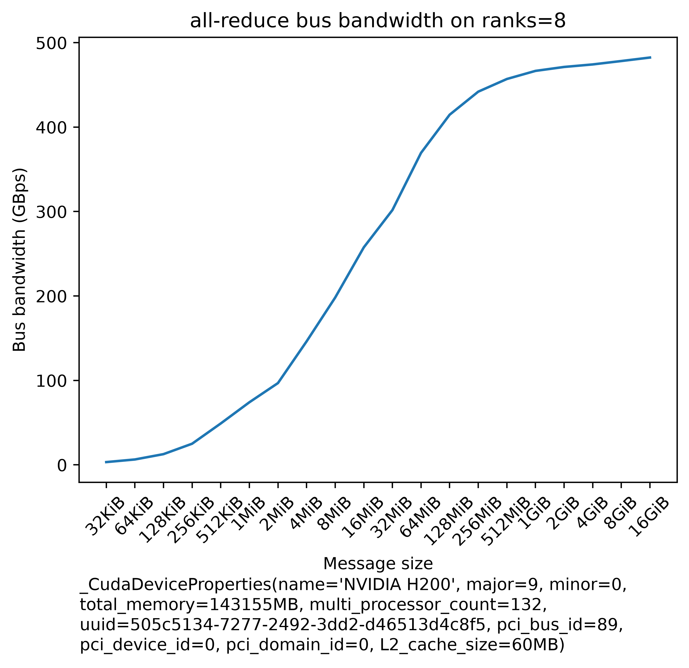
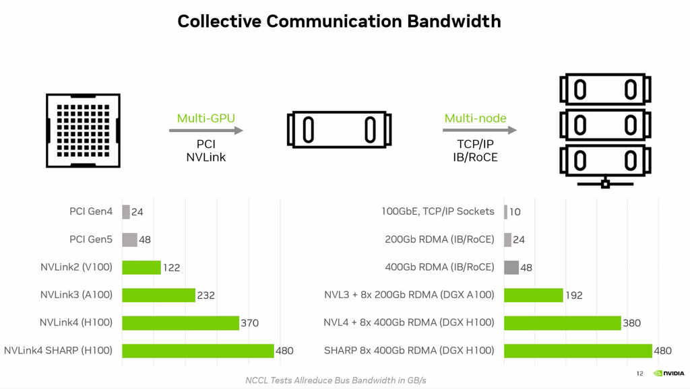
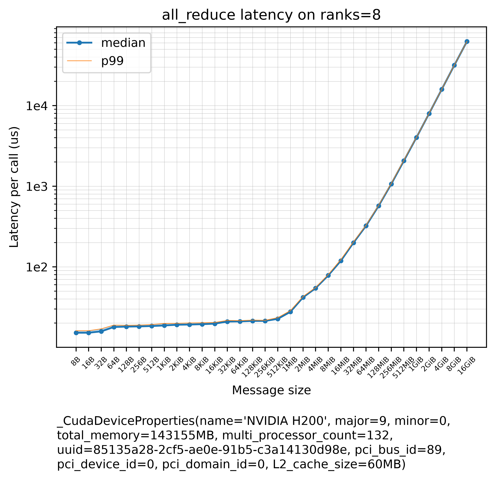
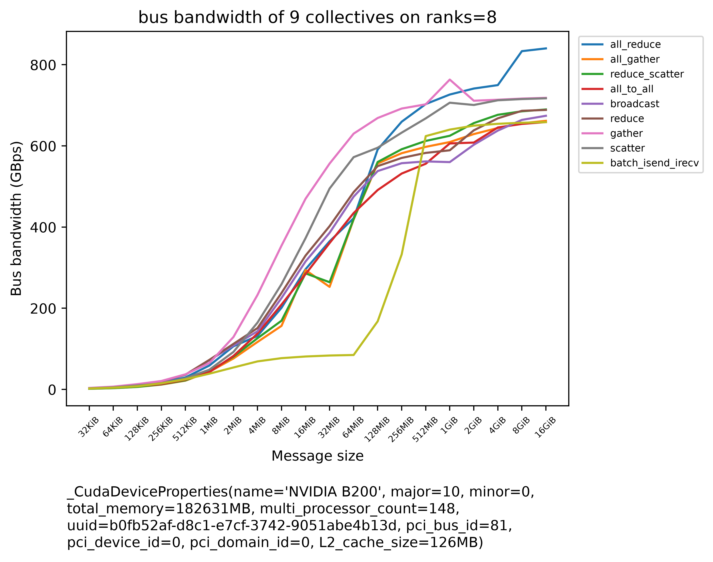

Measuring and Debugging the Network
Prerequisites
This chapter is the practical companion to Collective communication internals: that chapter predicts what a collective should cost, this one measures what it does cost and fixes the setup when the two disagree. It uses:
- Toolkit - the terminal, grep, and Make and Makefiles (nccl-tests and nvbandwidth are built from source).
- Linux and the OS - environment variables (every
NCCL_*setting is one), ulimits and pinned memory (the docker flags). - Networking - interfaces and the routing table, HPC networking: RDMA, InfiniBand, RoCE, EFA, ECMP, how PyTorch distributed bootstraps and which interface NCCL picks.
- Distributed systems - ranks, rendezvous and per-rank logs.
- Containers and virtualization - the run flags that matter for ML, IOMMU, VFIO and PCIe passthrough and Apptainer for HPC.
- GPU execution model - SMs and CTAs (thread blocks), for the
NCCL_MIN_CTAS/NCCL_MAX_CTASsection. - GPU software stack - InfiniBand for operators (
ibstat, the subnet manager), network plugins, the NCCL environment variables an operator sets and nccl-tests: single node, then two, then all (multi-node nccl-tests with MPI). - Interconnects - NVLink, NVSwitch, PCIe, InfiniBand and the measured numbers this chapter's benchmarks produced; and Collective communication internals - the communication patterns, algbw vs busbw, the tuning model, protocols and symmetric memory.
Forward links: Slurm from zero (sbatch, salloc, srun and the Pyxis plugin appear in the launch commands; each is explained where it is used), Kubernetes from zero, model parallelism derivations (which parallelism generates which traffic) and Debugging distributed training (hangs and multi-node debugging at the PyTorch level).
Introduction
Most network problems in ML training don't need a network engineer. They come in two kinds:
- It doesn't work, or it's mysteriously slow: NCCL picked the wrong interface, a container lacks a library, P2P is disabled, a cloud-specific variable is missing. The fix is to look at what NCCL decided and correct it.
- It works, but is it as fast as it should be? You need a benchmark that tells you the real bandwidth and latency of each collective, so that you can compare it with the spec, with the cost model, and with the last time you measured.
The chapter follows that order: reproducibility first (a measurement you can't repeat tells you nothing), then getting connectivity right, then the benchmarks, then the performance knobs, and last the debugging tools for counting and logging what NCCL does.
How to use the code: blocks marked [torch] run on a laptop CPU with pip install torch numpy and the gloo backend, like in Measuring collectives on a laptop with gloo. Pure Python and shell blocks need nothing else. Blocks marked [GPU, untested] need NVIDIA GPUs and NCCL and were not run while writing this chapter. The GPU tables and plots in this chapter are measurements made with the repository's own torch-dist-bench.py on the machines named next to each one, quoted as measured. The laptop outputs come from one Apple M4 with PyTorch 2.15.0 and Python 3.14 - one run each, an anecdote, not a benchmark.
Glossary
- Bonding: using several NICs together as one, for more speed or as a backup. An interface named
bond0ormlx5_bond_0is a bond (Linux bonding). - HCA: Host Channel Adapter - InfiniBand's term for a network adapter.
- IB: InfiniBand, originally by Mellanox, which NVIDIA acquired.
- NIC: Network Interface Card.
- OOB: Out-of-Band - a separate, usually slower Ethernet NIC used for setup and management rather than for the training traffic.
- RDMA: Remote Direct Memory Access - a NIC reading or writing another machine's memory without either CPU copying the data.
- P2P: peer-to-peer - one GPU reading or writing another GPU's memory directly, over NVLink or PCIe, without staging through host memory.
algbw/busbw: algorithm bandwidth (payload / time) and bus bandwidth (algbwtimes a per-collective factor that makes it comparable with the link speed), derived in algbw vs busbw.
Crucial reproducibility requirements
The most important requirement for a series of successful experiments is being able to reproduce the experiment environment again and again while changing only one or a few setup variables. So when you try to figure out whether some change improves performance or makes it worse, you must first find a way to keep everything else stable.
For network benchmarks that means preventing the network usage from fluctuating. When the BigScience team was doing performance optimizations for the 108B pre-BLOOM experiments, it was close to impossible: they were on a shared inter-node network, and the exact same setup would yield different throughput depending on how many other users were using the network at that moment. For BLOOM-176B they were given a dedicated Slurm partition with an isolated network where the only traffic was their own, and performance work in that environment was straightforward.
How much a shared resource can move a number is easy to see on any machine: run the same measurement alone, then while something else competes for the resource. On a laptop the shared resource is the CPU cores that gloo's all-reduce runs on, not a network, but the effect is the same:
# [torch] noisy_neighbour.py - the same all-reduce, alone and next to a "neighbour" that eats CPU
# run: python noisy_neighbour.py (4 gloo ranks; the neighbour is 8 busy-looping processes)
import os, time, statistics, multiprocessing as mp_std
import torch, torch.distributed as dist, torch.multiprocessing as mp
def spin():
while True:
pass
def bench(reps=30):
buf = torch.ones(4 * 2**20 // 4) # (1M,) 4MiB of fp32
times = []
for _ in range(reps):
dist.barrier(); t0 = time.perf_counter()
dist.all_reduce(buf)
times.append(time.perf_counter() - t0)
return statistics.median(times) * 1e3, max(times) * 1e3
def worker(rank, p, port, label):
os.environ.update(MASTER_ADDR="127.0.0.1", MASTER_PORT=str(port))
dist.init_process_group("gloo", rank=rank, world_size=p)
bench(5) # warmup
med, worst = bench()
if rank == 0:
print(f"{label:10s} median {med:6.2f}ms worst {worst:6.2f}ms")
dist.destroy_process_group()
if __name__ == "__main__":
mp.spawn(worker, args=(4, 29531, "alone"), nprocs=4)
hogs = [mp_std.Process(target=spin, daemon=True) for _ in range(8)]
for h in hogs: h.start()
mp.spawn(worker, args=(4, 29532, "contended"), nprocs=4)
for h in hogs: h.terminate()
Two runs on the M4 (10 cores, so 4 ranks plus 8 spinning processes oversubscribe it):
alone median 1.98ms worst 4.06ms
contended median 2.43ms worst 4.79ms
alone median 1.87ms worst 5.27ms
contended median 2.85ms worst 4.46ms
How to read this output: each line is the median and the worst of 30 timed 4MiB all-reduces. The neighbour made the median 23% and 52% slower in the two runs, nothing in the benchmark changed, and the size of the effect itself varied between runs. The worst case doesn't even separate the two conditions - it's noise either way. On a shared cluster network the neighbour is other jobs' traffic, and you can't see it from inside your job. So: for performance work, ask for a reservation or an isolated partition, record what else was running, repeat each measurement enough times to see its spread, and compare medians, not single runs.
How to diagnose NCCL multi-gpu and multi-node connectivity issues
This section covers the most common setup issues; Debugging distributed training covers debugging multi-node issues at the PyTorch level. For more complex problems, search the NCCL repo Issues or file a new Issue if none matches your situation. NCCL also has a brief troubleshooting section, but usually you learn a lot more from reading the Issues.
Use a small test script, not your application
For network diagnostics, don't use the full application: it can take a long time to launch and can have unrelated issues. Use a small script that does nothing but initialize the process group and run a few collectives. This repository has one built for this, torch-distributed-gpu-test.py.
First, run it with:
export NCCL_DEBUG=INFO
which makes NCCL print a lot of debug information about its setup and its network traffic. For a single node with 8 GPUs [GPU, untested]:
NCCL_DEBUG=INFO torchrun --nproc_per_node 8 --nnodes 1 torch-distributed-gpu-test.py
(This assumes you copied the script into the current directory. --nproc_per_node 8 starts one process per GPU and --nnodes 1 says this is the only node. Putting NCCL_DEBUG=INFO in front of the command sets it for that one command only.)
To launch it on multiple nodes, either use an orchestrator like Slurm or Kubernetes (covered in Slurm from zero and Kubernetes from zero), or launch it by hand on each node - pdsh, which runs one command over ssh on many hosts at once, is a big help here. The instructions are inside torch-distributed-gpu-test.py. To understand how things work, start with 1 node, then progress to 2, and later to more.
Read the NET/ line
In the output, look for a line that starts with:
NCCL INFO NET/
and check which transport and which interfaces it is using. For example, this output:
NCCL INFO NET/FastSocket : Using [0]ibs108:10.0.19.12<0> [1]ibs109:10.0.19.13<0> [2]ibs110:10.0.19.14<0> [3]ibs111:10.0.19.15<0> [4]ibs112:10.0.19.16<0> [5]ibs113:10.0.19.17<0> [6]ibs114:10.0.19.18<0> [7]ibs115:10.0.19.19<0>
tells us that the nccl-fastsocket transport plugin is used (a net plugin: Google's faster TCP transport for its cloud) and that it discovered 8 ibs* network interfaces (NIC cards). On Google Cloud this is correct, and NCCL is likely set up correctly. But if you're on InfiniBand (IB) and get this output, you'll clock a very low inter-node speed, because it means the wrong plugin is active.
On IB, what you want to see is NET/IB and its IB interfaces:
NCCL INFO NET/IB : Using [0]mlx5_0:1/IB [1]mlx5_1:1/IB [2]mlx5_2:1/IB [3]mlx5_3:1/IB [4]mlx5_4:1/IB [5]mlx5_5:1/IB [6]mlx5_6:1/IB [7]mlx5_7:1/IB [RO]; OOB eno1:101.262.0.9<0>
How to read these lines: each [N] entry is one interface NCCL will use. For sockets it is name:IP-address<port> (the <0> is just a not-yet-bound port number); for IB it is device:port/link-layer, so mlx5_0:1/IB is port 1 of the adapter mlx5_0, running InfiniBand. [RO] means PCIe Relaxed Ordering is enabled for the RDMA traffic - a PCIe setting that lets the adapter's writes to memory complete out of order, for higher throughput. Everything after ; is the bootstrap interface.
Here IB is used with 8 mlx5_* interfaces for the collectives, and one OOB interface, eno1, which is used for bootstrapping the connections and is usually a slower Ethernet NIC (at times several NICs bonded into one, which is what bond in an interface name means). Which interface does NCCL pick? shows the neighbouring Bootstrap and Channel lines of the same log.
Find out which interfaces the node has
To list a node's TCP/IP interfaces, run ifconfig on one of the nodes (the older tool; ip -br addr is the modern equivalent, see Interfaces and the routing table). Typically all similar nodes have the same interface names, but not always.
If the collectives network is IB, run ibstat instead of ifconfig. The NET/IB example above corresponds to this output:
$ ibstat | grep mlx5
CA 'mlx5_0'
CA 'mlx5_1'
CA 'mlx5_2'
CA 'mlx5_3'
CA 'mlx5_4'
CA 'mlx5_5'
CA 'mlx5_6'
CA 'mlx5_7'
(CA is "channel adapter", one per HCA.)
Which RDMA commands answer at all depends on the fabric, so it helps to know what each one asks:
| Command | Asks | Answers on |
|---|---|---|
ibstat, ibnetdiscover, iblinkinfo, ibhosts, ibswitches, perfquery |
the subnet manager (the fabric-wide service that hands out addresses and answers topology questions on InfiniBand) | a real InfiniBand fabric only |
ibv_devices, ibv_devinfo, ibstatus, cat /sys/class/infiniband/*/ports/1/rate |
the local adapter | any fabric the RDMA stack enumerates |
So identify the fabric first, with a command from the second row:
- On InfiniBand, the port's
link_layerisInfiniBand, and the subnet-manager tools work. - On RoCE, which carries RDMA over Ethernet,
link_layerisEthernet. - On EFA (AWS's adapter) there is no subnet manager:
ibv_devinforeportstransport: unspecifiedwithlink_layer: Unspecified,ibstatusreports each portACTIVEat its rate, and the subnet-manager tools fail -ibnetdiscoverwithCan't open SMI UMAD port, whileibstat -lprints nothing at all.
That silent empty output is the trap: it reads as "this node has no RDMA devices". On a 2026-09 AWS node, ibstat -l printed nothing while the node had 16 adapters, each ACTIVE at 200 Gb/sec (4X HDR).
A sketch that runs the second-row tools and prints the link layer of every port, which is enough to tell the three fabrics apart [GPU node, untested]:
# which_fabric.sh - one line per RDMA port: device, port, link layer, state, rate
for p in /sys/class/infiniband/*/ports/*; do
dev=$(basename $(dirname $(dirname $p))); port=$(basename $p)
echo "$dev:$port $(cat $p/link_layer) $(cat $p/state) $(cat $p/rate)"
done
On the IB node above you would expect eight lines like mlx5_0:1 InfiniBand 4: ACTIVE 400 Gb/sec (4X NDR); on RoCE the middle word is Ethernet; on EFA it is Unspecified.
The interfaces you don't want
Besides the fast inter-node NICs, a node almost always has a slow management Ethernet NIC (or several), which is there to configure the node, reach a shared file system and the Internet, so ifconfig lists more than the fast NICs. You are also likely to have a docker network interface, lo (loopback) and some others. For example, on a desktop:
$ ifconfig
docker0: flags=4163<UP,BROADCAST,RUNNING,MULTICAST> mtu 1500
inet 172.99.0.1 netmask 255.255.0.0 broadcast 172.99.255.255
inet6 f330::42:fe33:f335:7c94 prefixlen 64 scopeid 0x20<link>
ether 02:42:fe:15:1c:94 txqueuelen 0 (Ethernet)
RX packets 219909 bytes 650966314 (650.9 MB)
RX errors 0 dropped 0 overruns 0 frame 0
TX packets 262998 bytes 20750134 (20.7 MB)
TX errors 0 dropped 0 overruns 0 carrier 0 collisions 0
lo: flags=73<UP,LOOPBACK,RUNNING> mtu 65536
inet 127.0.0.1 netmask 255.0.0.0
inet6 ::1 prefixlen 128 scopeid 0x10<host>
loop txqueuelen 1000 (Local Loopback)
RX packets 1147283113 bytes 138463231270 (138.4 GB)
RX errors 0 dropped 0 overruns 0 frame 0
TX packets 1147283113 bytes 138463231270 (138.4 GB)
TX errors 0 dropped 0 overruns 0 carrier 0 collisions 0
eth0: flags=4163<UP,BROADCAST,RUNNING,MULTICAST> mtu 1500
inet 10.0.0.23 netmask 255.255.255.0 broadcast 10.0.0.255
inet6 2601:3108:1c71:600:4224:7e4b:13e4:7b54 prefixlen 64 scopeid 0x0<global>
ether 04:41:1a:16:17:bd txqueuelen 1000 (Ethernet)
RX packets 304675330 bytes 388788486256 (388.7 GB)
RX errors 0 dropped 0 overruns 0 frame 0
TX packets 74956770 bytes 28501279127 (28.5 GB)
TX errors 0 dropped 0 overruns 0 carrier 0 collisions 0
device memory 0xa3b00000-a3bfffff
How to read the ifconfig output: each block is one interface; inet is its IPv4 address, mtu its maximum packet size, and the RX/TX lines count received and transmitted packets and errors.
The critical part is that NCCL reports only the correct interfaces in its Using line. If interfaces like docker0, lo or eth0 are reported, e.g.:
NCCL INFO NET/Socket : Using [0]eth0:10.0.0.23<0>
it's most likely not what you want if faster interfaces are available. Of course, sometimes the Ethernet NIC is all you have, in which case this is just fine - only slow. The symptoms of a wrong choice:
- If the wrong interface ends up being used, the application might just hang.
- If NCCL has all the correct interfaces plus some incorrect ones, it might work, but slower.
In a cloud environment, the provider should give you instructions on how to set this up correctly. If they didn't, at least ask them which network interfaces NCCL needs to use.
Telling NCCL which interfaces to use
NCCL tries hard to auto-discover the right interfaces. If it gets them wrong, you can tell it which to use or not to use:
NCCL_SOCKET_IFNAMEselects whichifconfiginterfaces to include or exclude when not using InfiniBand (seeNCCL_SOCKET_IFNAMEbelow; full doc):
export NCCL_SOCKET_IFNAME=eth # all interfaces starting with eth
export NCCL_SOCKET_IFNAME==eth0 # only eth0
export NCCL_SOCKET_IFNAME==eth0,eth1 # only interfaces eth0 and eth1
export NCCL_SOCKET_IFNAME=^docker # do not use any interface starting with docker
export NCCL_SOCKET_IFNAME=^=docker0 # do not use interface docker0
NCCL_IB_HCA: when using IB RDMA (IB Verbs interfaces), use this instead ofNCCL_SOCKET_IFNAMEto select the adapters for the collectives (seeNCCL_IB_HCAbelow; full doc):
export NCCL_IB_HCA=mlx5 # all ports of cards starting with mlx5
export NCCL_IB_HCA==mlx5_0:1,mlx5_1:1 # port 1 of mlx5_0 and mlx5_1
export NCCL_IB_HCA=^=mlx5_1,mlx5_4 # do not use mlx5_1 and mlx5_4
The syntax is the same for both: a comma-separated list; by default each entry is a prefix; a leading = makes the entries exact names; a leading ^ turns the list into an exclusion list. A model of those documented rules, applied to a made-up node, shows what each line selects:
# ifname.py - the NCCL_SOCKET_IFNAME / NCCL_IB_HCA list syntax, as documented, applied to a node's interfaces
# (a model of the documented rules, not NCCL's code: prefix match by default, "=" exact, "^" exclude;
# NCCL_IB_HCA entries may also carry ":port", ignored here)
def select(spec, names):
exclude = spec.startswith("^"); spec = spec.lstrip("^")
exact = spec.startswith("="); spec = spec.lstrip("=")
pats = [s.split(":")[0] for s in spec.split(",")]
hit = lambda n: any(n == p if exact else n.startswith(p) for p in pats)
return [n for n in names if hit(n) != exclude]
ifaces = ["docker0", "lo", "eth0", "eth1", "ib0"]
for spec in ["eth", "=eth0", "=eth0,eth1", "^docker", "^=docker0"]:
print(f"NCCL_SOCKET_IFNAME={spec:12s} -> {select(spec, ifaces)}")
hcas = [f"mlx5_{i}" for i in range(8)] + ["mlx5_bond_0"]
for spec in ["mlx5", "=mlx5_0:1,mlx5_1:1", "^=mlx5_1,mlx5_4", "^mlx5_bond_0:1"]:
print(f"NCCL_IB_HCA={spec:20s} -> {select(spec, hcas)}")
NCCL_SOCKET_IFNAME=eth -> ['eth0', 'eth1']
NCCL_SOCKET_IFNAME==eth0 -> ['eth0']
NCCL_SOCKET_IFNAME==eth0,eth1 -> ['eth0', 'eth1']
NCCL_SOCKET_IFNAME=^docker -> ['lo', 'eth0', 'eth1', 'ib0']
NCCL_SOCKET_IFNAME=^=docker0 -> ['lo', 'eth0', 'eth1', 'ib0']
NCCL_IB_HCA=mlx5 -> ['mlx5_0', 'mlx5_1', 'mlx5_2', 'mlx5_3', 'mlx5_4', 'mlx5_5', 'mlx5_6', 'mlx5_7', 'mlx5_bond_0']
NCCL_IB_HCA==mlx5_0:1,mlx5_1:1 -> ['mlx5_0', 'mlx5_1']
NCCL_IB_HCA=^=mlx5_1,mlx5_4 -> ['mlx5_0', 'mlx5_2', 'mlx5_3', 'mlx5_5', 'mlx5_6', 'mlx5_7', 'mlx5_bond_0']
NCCL_IB_HCA=^mlx5_bond_0:1 -> ['mlx5_0', 'mlx5_1', 'mlx5_2', 'mlx5_3', 'mlx5_4', 'mlx5_5', 'mlx5_6', 'mlx5_7']
How to read this output: each line is one setting and the interfaces it leaves NCCL. Two things to notice. First, the prefix form NCCL_IB_HCA=mlx5 also catches mlx5_bond_0, because its name starts with mlx5 - which is exactly the next problem. Second, an exclusion list only removes what it names: ^docker still leaves lo in this model (NCCL's own default heuristic skips lo and docker*, but once you set the variable, your list is what counts).
With IB there are often extra interfaces like mlx5_bond_0 that you don't want in the NCCL comms. This report shows that the wrong [8]mlx5_bond_0:1/RoCE interface was included, which would almost certainly lead to low bandwidth:
NCCL INFO NET/IB : Using [0]mlx5_0:1/IB [1]mlx5_1:1/IB [2]mlx5_2:1/IB [3]mlx5_3:1/IB [4]mlx5_4:1/IB [5]mlx5_5:1/IB [6]mlx5_6:1/IB [7]mlx5_7:1/IB [8]mlx5_bond_0:1/RoCE [RO]; OOB ibp25s0:10.0.12.82<0>
Exclude it with:
export NCCL_IB_HCA=^mlx5_bond_0:1
or list explicitly the interfaces you want:
export NCCL_IB_HCA==mlx5_0,mlx5_1,mlx5_2,mlx5_3,mlx5_4,mlx5_5,mlx5_6,mlx5_7
As mentioned above, ibstat lists the available adapters if the fabric is InfiniBand; on any other RDMA fabric use ibv_devices or ibv_devinfo.
When to touch any of this
NCCL chooses the network interfaces automatically, so you only need the above if NCCL doesn't work or is slow. Normally it works out of the box.
Two common ways it stops working:
- Cloud-provided variables. Depending on the cloud, the provider may give you a slew of environment variables to set. If some are set incorrectly, NCCL may run slowly or not at all.
- Carrying a setup from cloud A to cloud B. Users often reuse the NCCL setup that worked on one cloud on another. Often it doesn't translate, and you have to carefully remove every previously set variable and set them anew for the new cloud. This happens even on the same cloud with a different instance type, because some network setups are very specific to an instance and won't work elsewhere. A clean check is to print every
NCCL_*,FI_*(libfabric, used by EFA) andUCX_*variable each rank sees, before the first collective:
# on every rank, at the top of the job script
env | grep -E '^(NCCL|FI|UCX)_' | sort | sed "s/^/[$(hostname -s)] /"
Once NCCL is set up correctly, the next step is to benchmark the connectivity and check that it matches the advertised speed (well, about 80% of it) - see Benchmark tools.
NCCL with docker containers
Three things commonly go wrong when NCCL runs inside a container (Containers and virtualization covers the mechanisms):
- Not enough resources. Add
--shm-size=1g --ulimit memlock=-1todocker run: a bigger/dev/shmfor NCCL's shared-memory transport (how GPUs in different processes on the same node exchange data when P2P isn't used), and unlimited pinned memory for RDMA registration (an RDMA NIC can only access memory that is pinned, see The run flags that matter for ML). NCCL's troubleshooting notes have the details. - Privileged access. Sometimes you need to add
--privilegedtodocker run. - Missing user-space RDMA libraries. The image must include the right packages: with IB you want at least
libibverbs1andlibrdmacm1(the user-space IB verbs library, and the RDMA connection manager library that sets up RDMA connections).
Put together [GPU, untested]:
docker run --gpus all --shm-size=1g --ulimit memlock=-1 --network host \
--device /dev/infiniband my-training-image \
bash -c 'ulimit -l; df -h /dev/shm; ls /dev/infiniband; ibv_devinfo -l'
How to read what it prints: ulimit -l should say unlimited; df -h /dev/shm should show the size you asked for (docker's default is 64M); ls /dev/infiniband should list uverbs* devices, which the RDMA libraries open; and ibv_devinfo -l should list the HCAs - if it says the command isn't found, the image lacks the RDMA user-space packages. --network host (use the host's network interfaces directly) and --device /dev/infiniband (expose the RDMA devices) are the usual way to give a container the fast NICs; your cluster's container setup may do this differently.
How to check if P2P is supported
Sometimes you need to know whether the GPUs on a node support P2P access. Without P2P, intra-node traffic goes through host memory, which typically makes it much slower.
nvidia-smi topo -p2p r prints a GPU-by-GPU matrix of whether each pair supports P2P reads (r; other letters query writes, NVLink, atomics and so on - see nvidia-smi topo -h). On this 8x NVIDIA H100 node P2P is supported:
$ nvidia-smi topo -p2p r
GPU0 GPU1 GPU2 GPU3 GPU4 GPU5 GPU6 GPU7
GPU0 X OK OK OK OK OK OK OK
GPU1 OK X OK OK OK OK OK OK
GPU2 OK OK X OK OK OK OK OK
GPU3 OK OK OK X OK OK OK OK
GPU4 OK OK OK OK X OK OK OK
GPU5 OK OK OK OK OK X OK OK
GPU6 OK OK OK OK OK OK X OK
GPU7 OK OK OK OK OK OK OK X
Legend:
X = Self
OK = Status Ok
CNS = Chipset not supported
GNS = GPU not supported
TNS = Topology not supported
NS = Not supported
U = Unknown
How to read it: row GPUi, column GPUj says whether GPU i can read GPU j's memory directly; the diagonal is X (self). On this 2x NVIDIA L4 node, P2P is not supported:
$ nvidia-smi topo -p2p r
GPU0 GPU1
GPU0 X CNS
GPU1 CNS X
CNS means "Chipset not supported". With high-end datacenter GPUs this is very unlikely, but some low-end datacenter GPUs, like the L4 above, may not support P2P.
For consumer GPUs there can be many reasons. Often it's the IOMMU and/or ACS features being enabled (both introduced in IOMMU, VFIO and PCIe passthrough): either can force peer-to-peer PCIe traffic up through the CPU's root complex instead of directly between devices. Other times it's just the driver version. And if you search, you may find people patching drivers to enable P2P on GPUs that officially don't support it, like this 4090 P2P support repo.
- To check whether PCI Access Control Services (ACS) are enabled, and to disable them, follow NCCL's guide (and see Disable Access Control Services below).
- The IOMMU can be disabled in the BIOS.
You can also check P2P support between two specific GPUs from PyTorch - here GPUs 0 and 1 [GPU, untested]:
python -c "import torch; print(torch.cuda.can_device_access_peer(torch.device('cuda:0'), torch.device('cuda:1')))"
Without P2P support this prints False. The same check for every pair, laid out like nvidia-smi's matrix [GPU, untested]:
# p2p_matrix.py - torch's view of P2P for every GPU pair
import torch
n = torch.cuda.device_count()
print(" " + "".join(f"GPU{j:<4}" for j in range(n)))
for i in range(n):
row = ["X" if i == j else ("OK" if torch.cuda.can_device_access_peer(i, j) else "--") for j in range(n)]
print(f"GPU{i} " + "".join(f"{c:<7}" for c in row))
If the two disagree with each other, believe neither and run p2pBandwidthLatencyTest, which measures P2P on vs off.
Disable Access Control Services
PCI Access Control Services (ACS) are used for IO virtualization (also known as VT-d or IOMMU). They force P2P PCIe transactions to go up through the PCIe Root Complex, which prevents GDS (GPUDirect Storage, DMA straight between storage and GPU memory) - and GPUDirect RDMA - from bypassing the CPU on the paths between a network adapter or NVMe drive and the GPU, in systems that include a PCIe switch.
For optimal GDS performance, disable ACS by following NCCL's instructions; NVIDIA's GDS best-practices guide has additional notes. To see whether ACS is on for each PCIe bridge [GPU node, untested]:
sudo lspci -vvv | grep -E "^[0-9a-f]|ACSCtl" | grep -B1 ACSCtl
How to read it: each bridge with ACS capability prints an ACSCtl: line of flags such as SrcValid+ TransBlk- ReqRedir+ CmpltRedir+ UpstreamFwd+; a + after ReqRedir or CmpltRedir means requests between devices below that bridge are redirected up to the root complex, i.e. ACS is getting in the way of P2P.
If you're using virtual machines, you can't disable ACS, as it's a required feature there. To run at maximum performance inside VMs, Address Translation Service (ATS) needs to be enabled in the network adapters: ATS lets the adapter cache its own IOMMU address translations, so its peer-to-peer traffic can go directly to the GPU instead of up to the Root Complex.
PCIe, NUMA and GPUDirect RDMA shows how this shows up in what NCCL picks.
Benchmark tools
torch-dist-bench
torch-dist-bench.py benchmarks the real network bandwidth and latency of all_reduce and other collectives over a range of payloads. It tells you what you actually get, as opposed to the advertised spec. It is similar to nccl-tests, but needs only PyTorch to run. Use it if your application calls NCCL collectives through torch.distributed, and nccl-tests if you write code that calls NCCL directly. It calls the collectives the way your program does: through PyTorch, which runs some of them with different NCCL calls than nccl-tests does - for example scatter and batch_isend_irecv (PyTorch's way of issuing several point-to-point sends and receives as one batch, see Point-to-point), as Other collectives shows. With --with-host-overhead it also includes PyTorch's per-call host overhead of some 20-30µs, which at small payloads is about as long as the collective itself.
Its previous incarnation was called all_reduce_bench.py, as it measured only all-reduce; that file is now a stub that points to the new name.
Launch examples are at the top of torch-dist-bench.py. The simplest, on one node with 2 GPUs [GPU, untested]:
python -u -m torch.distributed.run --nproc_per_node 2 --rdzv_endpoint localhost:6000 --rdzv_backend c10d \
torch-dist-bench.py
You can interrupt it with Ctrl-C and it still reports the results measured up to that point. Multi-node launches are in Network throughput.
On 4 nodes of 8x B200 (torch=2.14.1+cu130, cuda=13.0, nccl=2.30.7, 30 seconds for the whole sweep) it gives:
The average bandwidth and the per-call latency of all_reduce over 32 ranks (at least 5 warmups / 20 trials, up to 10 queued calls per trial):
| payload | busbw | algbw | latency | calls |
| | | | median | p99 | mean | |
| ------: | ---------: | ---------: | --------: | --------: | --------: | ----: |
| 8B | | | 81.9us | 88.0us | 81.9us | 810 |
| 16B | | | 81.6us | 89.4us | 81.7us | 828 |
| 32B | | | 82.0us | 91.8us | 82.2us | 783 |
| 64B | | | 82.5us | 92.7us | 82.8us | 783 |
| 128B | | | 83.0us | 89.8us | 83.3us | 792 |
| 256B | | | 83.9us | 94.5us | 83.9us | 774 |
| 512B | | | 84.1us | 98.5us | 84.8us | 783 |
| 1KiB | | | 85.4us | 90.1us | 85.6us | 810 |
| 2KiB | | | 89.5us | 95.3us | 89.7us | 738 |
| 4KiB | | | 99.3us | 105.1us | 99.3us | 666 |
| 8KiB | | | 102.3us | 114.8us | 102.4us | 765 |
| 16KiB | | | 102.4us | 118.8us | 103.9us | 711 |
| 32KiB | 0.64GBps | 0.33GBps | 104.5us | 119.7us | 105.4us | 738 |
| 64KiB | 1.27GBps | 0.65GBps | 106.5us | 123.8us | 107.2us | 504 |
| 128KiB | 2.35GBps | 1.21GBps | 114.6us | 130.6us | 115.1us | 252 |
| 256KiB | 4.20GBps | 2.17GBps | 128.1us | 138.3us | 128.4us | 126 |
| 512KiB | 6.99GBps | 3.61GBps | 151.7us | 168.2us | 153.2us | 126 |
| 1MiB | 12.78GBps | 6.60GBps | 165.9us | 187.0us | 167.0us | 153 |
| 2MiB | 21.84GBps | 11.27GBps | 193.1us | 205.1us | 193.8us | 162 |
| 4MiB | 31.49GBps | 16.25GBps | 261.3us | 281.2us | 262.9us | 171 |
| 8MiB | 50.40GBps | 26.01GBps | 331.8us | 344.1us | 332.7us | 144 |
| 16MiB | 73.17GBps | 37.77GBps | 452.7us | 469.2us | 454.2us | 180 |
| 32MiB | 142.79GBps | 73.70GBps | 473.2us | 498.5us | 474.8us | 162 |
| 64MiB | 198.44GBps | 102.42GBps | 686.2us | 709.2us | 688.0us | 180 |
| 128MiB | 258.60GBps | 133.47GBps | 1027.2us | 1068.6us | 1029.2us | 140 |
| 256MiB | 279.38GBps | 144.20GBps | 1961.0us | 2112.0us | 1960.1us | 60 |
| 512MiB | 310.01GBps | 160.00GBps | 3428.2us | 3822.2us | 3452.6us | 20 |
| 1GiB | 365.47GBps | 188.63GBps | 5801.0us | 5926.7us | 5806.3us | 20 |
| 2GiB | 371.07GBps | 191.52GBps | 11307.0us | 11423.6us | 11319.9us | 20 |
| 4GiB | 374.44GBps | 193.26GBps | 22362.0us | 22451.0us | 22376.0us | 20 |
| 8GiB | 375.75GBps | 193.93GBps | 44532.8us | 44775.3us | 44549.5us | 20 |
| 16GiB | 376.17GBps | 194.15GBps | 88813.6us | 89220.5us | 88832.0us | 20 |
How to read this table: each row is one payload size. busbw and algbw are the bandwidths (empty for the smallest payloads, where only latency is measured); the three latency columns describe how long a single call took; and calls is how many calls were timed for the latency. Read the normalized busbw column rather than algbw - nccl-tests' PERFORMANCE.md explains why, and so does algbw vs busbw. Like nccl-tests, the benchmark measures a unidirectional bandwidth, so compare it with the advertised unidirectional peak, not the bidirectional (duplex) one (see Unidirectional vs Bidirectional (Duplex)). "GBps" here is 10^9 bytes per second.
You can re-derive the columns from each other, which is a good way to make sure you read them right:
# read_table.py - re-derive three numbers from the B200 tables in this section
# 1) busbw = algbw * 2(n-1)/n for all-reduce, and algbw = payload / median time
n = 32
for payload, algbw, busbw, t_us in [(16 * 2**30, 194.15, 376.17, 88813.6), (1 * 2**20, 6.60, 12.78, 165.9)]:
print(f"{payload / 2**20:>6.0f}MiB algbw*2(n-1)/n = {algbw * 2 * (n - 1) / n:6.2f} (table {busbw})"
f" payload/median = {payload / (t_us * 1e-6) / 1e9:6.2f}GBps (table algbw {algbw})")
# 2) GBps -> Gbps, to compare with NIC spec sheets that quote bits
for name, gbps in [("1 node, 16GiB", 838.97), ("4 nodes, 16GiB", 376.60)]:
print(f"{name}: {gbps}GBps = {gbps * 8:.0f}Gbps")
# 3) TP inference: 2 all-reduces per layer per token, each in the flat 15us latency regime
layers, ar_per_layer, lat_us = 80, 2, 15
hidden, bf16 = 8192, 2
print(f"all-reduce payload per token: {hidden * bf16 // 1024}KiB, x32 tokens: {32 * hidden * bf16 // 1024}KiB")
print(f"{layers} layers x {ar_per_layer} x {lat_us}us = {layers * ar_per_layer * lat_us / 1000:.1f}ms per token")
16384MiB algbw*2(n-1)/n = 376.17 (table 376.17) payload/median = 193.44GBps (table algbw 194.15)
1MiB algbw*2(n-1)/n = 12.79 (table 12.78) payload/median = 6.32GBps (table algbw 6.6)
1 node, 16GiB: 838.97GBps = 6712Gbps
4 nodes, 16GiB: 376.6GBps = 3013Gbps
all-reduce payload per token: 16KiB, x32 tokens: 512KiB
80 layers x 2 x 15us = 2.4ms per token
How to read this output: the busbw column is exactly algbw times 2(n-1)/n = 1.9375 for 32 ranks. algbw is close to payload divided by the median latency at 16GiB, but 4% above it at 1MiB: the bandwidth and the latency are measured by different trials, and the latency trials put a CUDA event after every call, which slows small calls down - How the bandwidth is measured explains why the benchmark does it that way. Parts 2 and 3 are used further down.
If the matplotlib package is installed, the benchmark also creates a plot:

Here is the same benchmark on a single 8x H200 node (torch=2.14.0+cu130, cuda=13.0, nccl=2.30.7, 5 warmup and 20 trial iterations per payload, 13 seconds for the whole sweep):

The linear y-axis compresses everything below ~100GBps into the bottom of the plot, so the small-payload end - the part that matters for gradient bucketing - is easier to read off the default column of the table in How the bandwidth is measured, measured on the same node. That sweep tops out at 482.35GBps, which is above the 450GBps unidirectional NVLink 4 spec rather than below it. The reason is NVLink SHARP (NVLS): the NVSwitch does part of the reduction itself, so less data crosses each GPU's link than the busbw formula assumes (NVLS (NVLink SHARP)); SHARP in Interconnects shows when it engages and what the same node measures with it disabled.
Inter-node speed depends on intra-node speed explains why a 4-node benchmark (32 ranks) tops out at 376.17GBps when a single node (8 ranks) of the same B200s reaches 839.00GBps, and what that number means for each NIC.
This chart gives a good sense of the all-reduce scores to expect on a well-tuned network (left is intra-node, right is inter-node):

sourceIf you benchmark a different collective, the expected bandwidth can be very different from these all-reduce results. The same presentation also gives point-to-point bandwidth expectations.
To check the stability of all-reduce over time, rather than averaging, profile a single payload size with --profile_stability --payload_size_in_gib 0.5 (change the last value to the payload size you want, in GiB). A typical ML workload doesn't call all-reduce back to back non-stop, so this is a stress test, a somewhat untypical workload, but it can still show whether the network has issues under sustained load. Here is the plot it generated on an 8x B200 node with a 2GiB payload:

How to read it: each point is one all-reduce; a healthy network gives a flat band, while periodic dips or a slow drift point at congestion, thermal throttling or another job sharing the links.
How the bandwidth is measured
By default each trial keeps the GPU busy for ~2ms, queues up to 10 back-to-back dist.all_reduce calls behind that, and divides the elapsed time by the number of calls. Payloads up to 64MiB get 10 calls, larger ones fewer, and from 1GiB up a single call, where one call takes milliseconds anyway.
Why the busy wait: a PyTorch collective call costs 20-30µs of host (CPU) time before the GPU sees it. With the GPU busy, the host queues all the calls during the wait, and the GPU then runs them back to back - which hides that overhead the way it is hidden in a program whose host stays ahead of the GPU, e.g. a training loop with enough compute queued between its collectives. Where the host doesn't stay ahead - small collectives issued back to back, or a program waiting on each result - use --with-host-overhead (below). The multiple calls also average out the ranks reaching the first one at slightly different times. The idea in a few lines [GPU, untested]:
# the timing pattern, simplified from torch-dist-bench.py
start, end = torch.cuda.Event(enable_timing=True), torch.cuda.Event(enable_timing=True)
torch.cuda._sleep(busy_cycles) # GPU spins ~2ms; meanwhile the host queues everything below
start.record()
for _ in range(calls):
dist.all_reduce(buf) # (numel,) queued on the stream, not run yet
end.record()
torch.cuda.synchronize()
t_per_call = start.elapsed_time(end) / 1000 / calls # seconds
These bandwidth trials record a CUDA event only before the first call and after the last. The latency is measured by separate trials with an event after every call, because an event recorded between two queued calls slows them down: on an 8x B200 node a 1MiB all-reduce takes 35µs with one and 30µs without, and nccl-tests shows the same difference between its -I 1 and its default timing. Timing the bandwidth with per-call events would cost an all-reduce 9-13% of its bandwidth from 8KiB to 2MiB there, and the other collectives up to 35%.
Here are the measurements on the same 8x H200 node as the plot above, next to nccl-tests built against the same NCCL version - which is what code calling the NCCL API directly gets:
| payload | default | nccl-tests | difference |
|---|---|---|---|
| 32KiB | 3.15GBps | 3.20GBps | +2% |
| 64KiB | 6.16GBps | 6.26GBps | +2% |
| 128KiB | 12.46GBps | 12.40GBps | -0.5% |
| 256KiB | 24.68GBps | 24.63GBps | -0.2% |
| 512KiB | 48.15GBps | 48.30GBps | +0.3% |
| 1MiB | 74.57GBps | 72.45GBps | -3% |
| 2MiB | 96.26GBps | 91.48GBps | -5% |
| 4MiB | 145.14GBps | 139.97GBps | -4% |
| 8MiB | 196.56GBps | 182.03GBps | -7% |
| 16MiB | 255.90GBps | 242.45GBps | -5% |
| 32MiB | 301.25GBps | 298.44GBps | -0.9% |
| 64MiB | 368.86GBps | 369.82GBps | +0.3% |
| 128MiB | 414.54GBps | 411.21GBps | -0.8% |
| 256MiB | 441.87GBps | 442.27GBps | +0.1% |
| 512MiB | 456.23GBps | 455.82GBps | -0.1% |
| 1GiB | 465.91GBps | 464.00GBps | -0.4% |
| 2GiB | 471.06GBps | 468.31GBps | -0.6% |
| 4GiB | 474.13GBps | 473.10GBps | -0.2% |
| 8GiB | 478.24GBps | 475.16GBps | -0.6% |
| 16GiB | 482.25GBps | 480.70GBps | -0.3% |
How to read it: default is torch-dist-bench's busbw, nccl-tests is nccl-tests' busbw, and difference is nccl-tests relative to torch-dist-bench. The two agree within 2%, except from 1MiB to 16MiB, where nccl-tests reads 3-7% lower. Which one to measure with depends on whether you're writing a PyTorch program or a NCCL kernel - see nccl-tests.
Three cases neither default mode captures:
- CUDA graphs. If your workload captures its all-reduce calls in a CUDA graph through PyTorch (a CUDA graph records a sequence of kernel launches once and replays it with one launch), expect lower
busbwat small payloads than this benchmark's default timing reports. Replaying PyTorch-captured all-reduces on B200 left a gap of about 2.5µs between consecutive ones, which cost regular all-reduces up to 9% and symmetric-memory ones 12-26% at 2MiB and below, where a call takes only 10-35µs. - A program that waits on each result. Add
--with-host-overheadto time one call per trial on an idle GPU instead. It charges the host overhead to every call - what an all-reduce costs when the program waits for its result before doing anything else. Its latency then also includes the ranks reaching the call at different times, as the latency of OSU'sosu_allreducedoes. - Overlap with compute. Neither mode times a collective that runs concurrently with compute kernels, as it does in a training loop that overlaps them. The kernels compete for the SMs and the memory bandwidth, so an overlapped collective can take longer than reported here if it can't immediately get all the SMs it needs (SM contention);
nccl-testsdoesn't time that either.
Latency
Next to the bandwidth, the benchmark reports how long a single call takes - the median, the 99th percentile (p99) and the mean - and plots the median and the p99 against the payload size. For small payloads this is the number that matters, because they move next to nothing: on an 8x H200 node an 8B all-reduce still takes 15µs, and every payload up to 512KiB takes 15-23µs, so a faster link wouldn't help them - fewer calls or cheaper ones would.
This adds up fast in inference. A model served with tensor parallelism over 8 accelerators does 2 all-reduces per layer for every generated token, and with a hidden size of 8192 in bf16 a batch of up to 32 tokens makes each one a 16-512KiB all-reduce, right in that flat range - so an 80-layer model waits 160 \times 15\ \mu\text{s} = 2.4\ \text{ms} per token on all-reduces alone, however fast its links (part 3 of read_table.py above). Training has small all-reduces too, to sync flags, scalars or loss values across ranks, and MoE pays the same toll on the all-to-all of its token routing.
And all-reduce is the best case: NCCL gives only all-reduce its tree algorithm, and NVLS can reduce it inside the switch, so other collectives can take longer at the same payload (see Which collective to measure latency with) - time them with --collectives.

On B200s the latency also shows what it costs to leave the node. Here is the all-reduce latency on one 8x B200 node and on 4 of them, from the same run as the table at the top:
| payload | 8 ranks median |
8 ranks p99 |
32 ranks median |
32 ranks p99 |
32 / 8 median |
|---|---|---|---|---|---|
| 8B | 23.0µs | 25.1µs | 81.9µs | 88.0µs | 3.6x |
| 1KiB | 29.5µs | 31.8µs | 85.4µs | 90.1µs | 2.9x |
| 16KiB | 30.7µs | 32.8µs | 102.4µs | 118.8µs | 3.3x |
| 128KiB | 32.8µs | 34.8µs | 114.6µs | 130.6µs | 3.5x |
| 512KiB | 35.8µs | 38.0µs | 151.7µs | 168.2µs | 4.2x |
| 1MiB | 35.9µs | 39.8µs | 165.9µs | 187.0µs | 4.6x |
| 4MiB | 60.4µs | 62.6µs | 261.3µs | 281.2µs | 4.3x |
| 16MiB | 104.4µs | 107.2µs | 452.7µs | 469.2µs | 4.3x |
Up to 16MiB a call takes 2.9-4.6 times as long once it crosses the network, and even an 8B all-reduce takes 82µs instead of 23µs. In alpha-beta terms, leaving the node multiplies \alpha by about 3.5.
How the latency is measured
- Per-call time. Each call's time runs from the end of the previous queued call to its own end, as in
nccl-tests' per-iteration timing (-I 1), which it reports in itsi_*columns, and as the median in its-JJSON output. The first call of a trial is left out, and a 1-element all-reduce after the busy wait lines the ranks up on the GPU before it: otherwise a rank whose busy wait ends first spends the difference waiting in its first calls - in one call for most collectives, but in up to ranks-1 calls forbatch_isend_irecv, whose ring passes the wait on one rank per call. - Slowest rank. A call isn't done until it's done on every rank, so each call's time is that of its slowest rank, as in
nccl-tests' per-iteration median and p99. nccl-tests'timecolumn is instead each rank's time per call averaged over the ranks, which is close for an all-reduce, whose ranks finish together, but lower for collectives whose ranks don't, such asbroadcast. - How many calls. Small payloads get up to 1000 calls each, so that the p99 is the 10th slowest of them, and larger payloads fewer, once 1000 calls would move more than 40MiB - Intel MPI Benchmarks counts its repetitions the same way.
nccl-teststimes 20 calls by default, and OSU'sosu_allreduce1000 up to 8KiB and 100 above. - Median and p99, not the mean. One slow call moves the mean but not the median, and the p99 shows how slow the slow calls get. The mean is printed too.
- Host pauses are dropped. A rank's Python thread occasionally pauses for a few milliseconds. When that happens while it queues a trial's calls, its GPU runs out of queued work before the 2ms busy wait is over, and the trial times the pause rather than the all-reduce. Such trials are left out on all ranks, and the report says how many: on the 8x H200 node it was 50-60 of 1904 trials per run. Without this, the p99 at small payloads read anywhere from 19µs to 380µs and changed from run to run.
The statistics part is ordinary Python; here is what "the slowest rank, then median and p99" means on made-up numbers:
# slowest_rank.py - per-call latency = max over ranks; then median and p99 over calls
import random, statistics
random.seed(0)
ranks, calls = 8, 1000
# each rank's time for each call: 15us plus small noise, and a rare 3ms host hiccup on one rank
t = [[15 + random.expovariate(1.0) + (3000 if random.random() < 0.002 else 0) for _ in range(ranks)]
for _ in range(calls)]
per_call = sorted(max(row) for row in t) # a call ends when its slowest rank ends
mean_rank = sorted(sum(row) / ranks for row in t) # nccl-tests' `time`: averaged over ranks instead
p99 = lambda xs: xs[int(0.99 * len(xs)) - 1] # the 10th slowest of 1000
print(f"slowest rank: median {statistics.median(per_call):6.1f}us p99 {p99(per_call):7.1f}us "
f"mean {statistics.mean(per_call):6.1f}us")
print(f"rank average: median {statistics.median(mean_rank):6.1f}us mean {statistics.mean(mean_rank):6.1f}us")
slowest rank: median 17.5us p99 3016.0us mean 89.7us
rank average: median 16.0us mean 25.0us
How to read this output: the median barely moves between the two views (17.5µs vs 16.0µs), but the mean is pulled up by the few hiccups (89.7µs), which is why the benchmark reports the median. The p99 is the surprise: each rank hiccups on only 0.2% of calls, but a call is slow if any of the 8 ranks hiccups, which happens on about 1 - 0.998^8 \approx 1.6\% of calls - more than 1 in 100, so the p99 lands on a 3ms hiccup. That is the same effect as the 3.6-5.2ms p99 of --with-host-overhead in the table below, and why the default mode drops trials with a paused host. The slowest-rank view is always at least the rank average - a collective is as slow as its slowest member.
On the same 8x H200 node (torch=2.14.0+cu130, nccl=2.30.7), compared with nccl-tests timing 1000 calls per payload one by one (-n 1000 -w 200 -I 1, in-place):
| payload | median | p99 | sym-mem median |
sym-mem p99 |
host overhead median |
host overhead p99 |
nccl-teststime |
nccl-tests p99 |
|---|---|---|---|---|---|---|---|---|
| 8B | 15.2µs | 16.1µs | 8.1µs | 9.0µs | 36.6µs | 3668µs | 14.9µs | 16.1µs |
| 64B | 17.9µs | 19.0µs | 8.1µs | 9.2µs | 38.0µs | 5166µs | 17.0µs | 19.0µs |
| 1KiB | 18.8µs | 19.8µs | 8.4µs | 9.3µs | 39.1µs | 5213µs | 18.2µs | 19.7µs |
| 32KiB | 20.9µs | 21.7µs | 11.6µs | 12.4µs | 41.7µs | 4877µs | 20.4µs | 21.6µs |
| 256KiB | 21.4µs | 21.9µs | 12.6µs | 13.8µs | 43.5µs | 3607µs | 21.0µs | 21.7µs |
| 1MiB | 27.7µs | 28.5µs | 16.3µs | 17.2µs | 50.9µs | 75µs | 27.8µs | 28.6µs |
sym-mem: run with --sym-mem; host overhead: run with --with-host-overhead.
How to read it: the default timing agrees with nccl-tests within 1µs at the p99, and symmetric memory roughly halves the latency up to 16KiB. On an 8x B200 node with the same software the two agreed within 1µs as well - an 8B all-reduce took 23.5µs at the median and 24.7µs at the p99, and 11.6µs and 12.5µs with --sym-mem - so a small all-reduce costs more there than on the H200 node. --with-host-overhead keeps the trials in which a host paused, because that's what a program that waits on each all-reduce gets: its median adds the ~20µs of PyTorch's per-call overhead, and its p99 up to 256KiB is 3.6-5.2ms, because more than 1 call in 100 waited for some rank's paused host.
The report also names the smallest payload that reaches half the peak busbw - 16MiB or 32MiB on the 8x H200 node above, as 16MiB sits right at the half. Payloads below it get less than half the bandwidth the setup can give, and are better judged by their latency. In alpha-beta terms this is the payload n_{1/2} = \alpha/\beta where the fixed cost equals the transfer time (The alpha-beta model).
By default the latency is measured from 8B to 16GiB and the bandwidth from 32KiB to 16GiB, since below 32KiB a call's time is nearly all latency, so its busbw says little. --min-payload moves where the latency range starts, --min-busbw-payload where the bandwidth range starts, and --max-payload where both end - e.g. --max-payload 16K for a quick latency-only run.
Other collectives
The benchmark times all_reduce by default. To time other collectives, pass --collectives with one or more names, comma-separated, e.g. --collectives all_gather,reduce_scatter, or all for all nine - all_reduce, all_gather, reduce_scatter, all_to_all, broadcast, reduce, gather, scatter and batch_isend_irecv (The communication patterns shows what each does). Examples [GPU, untested]:
python -u -m torch.distributed.run --nproc_per_node=8 torch-dist-bench.py --collectives all_gather,reduce_scatter
python -u -m torch.distributed.run --nproc_per_node=8 torch-dist-bench.py --collectives all
Each collective gets the same timing and plots as all_reduce, saved as busbw-mean-<collective>-<host>-<ranks>.png and latency-<collective>-<host>-<ranks>.png. When more than one is benchmarked, a busbw table and a latency-median table follow, payloads down the rows and collectives across - add --separate-tables for one table per collective, with algbw and the latency's p99 and mean as well - and then a summary table and two plots comparing them, saved as busbw-mean-collectives-<host>-<ranks>.png and latency-collectives-<host>-<ranks>.png. All nine from 8B to 16GiB take under 2 minutes on one 8x B200 node.
The payload, algbw and busbw follow nccl-tests, whose PERFORMANCE.md explains them. The payload is the larger of a rank's input and output buffers, and busbw is algbw multiplied by a factor that makes it comparable across collectives and numbers of ranks n:
| collective | a rank's input | a rank's output | busbwfactor |
|---|---|---|---|
all_reduce |
the payload | the payload | 2(n-1)/n |
all_gather |
1/n of the payload | the payload | (n-1)/n |
reduce_scatter |
the payload | 1/n of the payload | (n-1)/n |
all_to_all |
the payload, 1/n per rank | the payload, 1/n from each rank | (n-1)/n |
broadcast |
the payload, on the root | the payload | 1 |
reduce |
the payload | the payload, on the root | 1 |
gather |
1/n of the payload | the payload, on the root | (n-1)/n |
scatter |
the payload, on the root | 1/n of the payload | (n-1)/n |
batch_isend_irecv |
the payload, to rank+1 | the payload, from rank-1 | 1 |
The root is rank 0, and batch_isend_irecv has each rank send to the next rank and receive from the previous one, as nccl-tests does. The send and the receive are issued together as one batch: unbatched, they'd run one after the other on the same stream, and each rank's send would wait on its neighbour's receive, which is queued behind that neighbour's own send.
As in nccl-tests, the 1/n pieces are rounded down to a multiple of 16 bytes, so payloads with less than 16 bytes per rank are skipped - those below 128B on 8 ranks - and with a number of ranks that isn't a power of 2, all_gather, gather, reduce_scatter, scatter and all_to_all move a little less than the payload, and the table reports what they did move.
Here are all nine on an 8x B200 node (torch=2.14.1+cu130, nccl=2.30.7, 2 minutes for the whole sweep), as the benchmark prints them - the busbw and the latency median of each collective at every payload, then the summary:
The average bandwidth and the per-call latency of 9 collectives over 8 ranks (at least 5 warmups / 20 trials, up to 10 queued calls per trial):
busbw, GBps
| pay | all_ | all_ | reduce_ | all_to | broad | reduce | gather | scatter | batch |
| load | reduce | gather | scatter | _all | cast | | | | _isend |
| | | | | | | | | | _irecv |
| -----: | -----: | -----: | ------: | -----: | -----: | -----: | -----: | ------: | -----: |
| 32KiB | 2.17 | 1.64 | 1.70 | 2.45 | 2.78 | 2.97 | 3.68 | 2.67 | 2.34 |
| 64KiB | 4.18 | 3.12 | 3.22 | 4.59 | 5.28 | 5.24 | 6.84 | 4.97 | 4.22 |
| 128KiB | 8.13 | 6.12 | 6.29 | 8.33 | 10.40 | 10.40 | 13.04 | 9.92 | 7.69 |
| 256KiB | 15.91 | 11.90 | 12.31 | 13.11 | 19.00 | 20.45 | 20.78 | 14.58 | 15.11 |
| 512KiB | 29.50 | 21.65 | 22.25 | 23.85 | 36.08 | 36.36 | 37.16 | 27.18 | 25.00 |
| 1MiB | 58.93 | 43.53 | 44.73 | 42.67 | 71.98 | 72.89 | 65.03 | 48.68 | 38.80 |
| 2MiB | 106.27 | 76.21 | 80.68 | 82.44 | 108.21 | 112.18 | 129.13 | 92.42 | 54.07 |
| 4MiB | 131.71 | 116.90 | 126.13 | 137.51 | 143.11 | 151.16 | 232.74 | 164.62 | 69.05 |
| 8MiB | 201.12 | 156.61 | 169.33 | 209.13 | 225.24 | 237.76 | 354.29 | 259.37 | 77.06 |
| 16MiB | 296.16 | 294.05 | 285.91 | 284.06 | 315.35 | 329.76 | 469.87 | 372.69 | 81.14 |
| 32MiB | 364.90 | 252.67 | 264.12 | 360.63 | 385.89 | 402.28 | 556.43 | 494.93 | 83.57 |
| 64MiB | 421.74 | 418.71 | 419.83 | 434.48 | 474.91 | 486.08 | 630.14 | 572.21 | 84.83 |
| 128MiB | 591.12 | 556.63 | 560.30 | 491.21 | 537.97 | 550.18 | 668.70 | 595.42 | 167.76 |
| 256MiB | 659.60 | 582.00 | 591.78 | 531.85 | 557.36 | 570.34 | 692.03 | 632.65 | 332.74 |
| 512MiB | 703.05 | 597.64 | 612.24 | 555.99 | 561.76 | 582.73 | 702.41 | 667.78 | 624.07 |
| 1GiB | 726.53 | 609.48 | 624.93 | 606.00 | 560.04 | 589.18 | 763.36 | 706.41 | 640.10 |
| 2GiB | 741.30 | 629.10 | 656.15 | 608.20 | 602.80 | 638.31 | 711.24 | 700.79 | 649.89 |
| 4GiB | 749.77 | 644.07 | 676.61 | 645.36 | 637.73 | 667.94 | 713.73 | 712.37 | 654.43 |
| 8GiB | 833.39 | 655.67 | 685.19 | 654.13 | 664.05 | 686.42 | 716.57 | 715.36 | 657.03 |
| 16GiB | 840.18 | 661.74 | 689.72 | 658.62 | 674.19 | 688.60 | 718.37 | 717.23 | 658.47 |
latency median, us
| pay | all_ | all_ | reduce_ | all_to | broad | reduce | gather | scatter | batch |
| load | reduce | gather | scatter | _all | cast | | | | _isend |
| | | | | | | | | | _irecv |
| -----: | ------: | ------: | ------: | ------: | ------: | ------: | ------: | ------: | ------: |
| 8B | 23.6 | | | | 12.3 | 11.6 | | | 16.4 |
| 16B | 23.5 | | | | 12.3 | 11.6 | | | 16.4 |
| 32B | 23.6 | | | | 12.3 | 11.6 | | | 16.4 |
| 64B | 27.6 | | | | 12.3 | 11.6 | | | 16.5 |
| 128B | 28.7 | 19.8 | 19.7 | 16.4 | 12.3 | 11.6 | 12.3 | 15.4 | 16.4 |
| 256B | 28.7 | 20.4 | 19.8 | 16.4 | 12.3 | 11.6 | 12.2 | 15.4 | 16.4 |
| 512B | 28.7 | 20.5 | 20.4 | 16.4 | 12.3 | 11.6 | 12.3 | 15.4 | 16.4 |
| 1KiB | 29.7 | 20.5 | 20.5 | 16.4 | 12.3 | 12.3 | 12.3 | 15.4 | 16.5 |
| 2KiB | 29.9 | 20.5 | 20.5 | 16.4 | 12.4 | 12.3 | 12.3 | 15.4 | 17.5 |
| 4KiB | 30.0 | 20.5 | 20.5 | 16.4 | 14.3 | 14.3 | 12.3 | 15.4 | 18.4 |
| 8KiB | 30.7 | 20.6 | 20.5 | 16.4 | 14.4 | 15.4 | 12.3 | 15.4 | 19.5 |
| 16KiB | 30.7 | 21.5 | 20.6 | 16.4 | 14.4 | 15.4 | 12.3 | 15.4 | 20.5 |
| 32KiB | 30.8 | 21.8 | 21.5 | 17.4 | 16.4 | 15.5 | 12.3 | 15.4 | 23.6 |
| 64KiB | 31.8 | 22.6 | 22.5 | 17.5 | 16.5 | 16.5 | 12.3 | 16.4 | 24.7 |
| 128KiB | 32.8 | 23.6 | 22.6 | 19.4 | 17.4 | 16.5 | 13.5 | 16.4 | 26.6 |
| 256KiB | 34.0 | 24.6 | 23.8 | 22.7 | 19.4 | 18.4 | 15.5 | 20.7 | 28.7 |
| 512KiB | 36.4 | 26.6 | 25.6 | 24.6 | 19.5 | 18.6 | 16.4 | 21.5 | 31.7 |
| 1MiB | 36.8 | 26.6 | 25.7 | 26.7 | 19.6 | 19.3 | 18.4 | 24.5 | 38.9 |
| 2MiB | 38.9 | 28.7 | 27.6 | 27.9 | 24.7 | 23.7 | 18.4 | 24.7 | 51.2 |
| 4MiB | 60.4 | 36.8 | 33.9 | 32.8 | 32.8 | 30.9 | 20.5 | 27.7 | 71.7 |
| 8MiB | 77.8 | 51.3 | 48.2 | 41.0 | 38.1 | 36.8 | 24.7 | 33.9 | 122.8 |
| 16MiB | 103.8 | 55.3 | 56.3 | 57.3 | 51.1 | 49.0 | 35.6 | 44.0 | 229.4 |
| 32MiB | 166.0 | 122.9 | 118.1 | 88.1 | 78.8 | 75.9 | 57.3 | 64.5 | 438.4 |
| 64MiB | 284.7 | 145.4 | 144.4 | 142.4 | 131.1 | 133.1 | 98.3 | 109.6 | 833.8 |
| 128MiB | 402.8 | 216.1 | 215.1 | 248.9 | 233.5 | 235.6 | 179.3 | 204.8 | 838.9 |
| 256MiB | 718.9 | 408.6 | 404.5 | 451.6 | 441.4 | 446.3 | 341.6 | 390.1 | 839.4 |
| 512MiB | 1345.5 | 795.5 | 775.2 | 859.1 | 860.9 | 845.6 | 671.1 | 754.7 | 880.6 |
| 1GiB | 2595.8 | 1549.3 | 1518.6 | 1555.9 | 2128.8 | 2016.3 | 1415.2 | 1353.7 | 1694.2 |
| 2GiB | 5081.1 | 2999.3 | 2879.5 | 3098.6 | 3775.5 | 3555.3 | 2725.9 | 2750.5 | 3325.9 |
| 4GiB | 10052.6 | 5853.7 | 5572.6 | 5836.8 | 6942.7 | 6619.1 | 5432.3 | 5336.1 | 6597.6 |
| 8GiB | 18091.5 | 11482.1 | 11005.9 | 11518.0 | 13140.5 | 12708.4 | 10652.7 | 10623.0 | 13150.2 |
| 16GiB | 35853.3 | 22769.6 | 21846.0 | 22860.8 | 25700.9 | 25147.9 | 21085.1 | 21192.7 | 26211.3 |
Summary of 9 collectives over 8 ranks:
fastest median latency
| collective | payload | fastest |
| :---------------- | ------: | ------: |
| reduce | 8B | 11.6us |
| gather | 256B | 12.2us |
| broadcast | 8B | 12.3us |
| scatter | 128B | 15.4us |
| all_to_all | 128B | 16.4us |
| batch_isend_irecv | 8B | 16.4us |
| reduce_scatter | 128B | 19.7us |
| all_gather | 128B | 19.8us |
| all_reduce | 16B | 23.5us |
busbw
| collective | payload | peak | half-peak |
| | | | payload |
| :---------------- | ------: | ---------: | --------: |
| all_reduce | 16GiB | 840.18GBps | 64MiB |
| gather | 1GiB | 763.36GBps | 16MiB |
| scatter | 16GiB | 717.23GBps | 16MiB |
| reduce_scatter | 16GiB | 689.72GBps | 64MiB |
| reduce | 16GiB | 688.60GBps | 32MiB |
| broadcast | 16GiB | 674.19GBps | 32MiB |
| all_gather | 16GiB | 661.74GBps | 64MiB |
| all_to_all | 16GiB | 658.62GBps | 32MiB |
| batch_isend_irecv | 16GiB | 658.47GBps | 256MiB |
How to read the summary: the fastest median is the smallest latency median across the measured payloads (empty cells in the latency table are payloads with less than 16 bytes per rank, skipped). The half-peak payload is the smallest payload reaching half the collective's peak busbw, as in How the latency is measured.


What the numbers say:
- The fastest
all_to_all, which MoE dispatch and combine use, is 16.4µs, against 23.5µs forall_reduce, and the fastestreduce,gatherandbroadcastare 11.6µs, 12.2µs and 12.3µs. --sym-membringsall_reduce,all_gatherandreduce_scatterdown to 11.6µs, moves the others' fastest payloads by less than 1µs, and makesbatch_isend_irecv1.8µs slower. At the peak,all_gatherreaches 749.03GBps instead of 661.74GBps, whilereduce_scattertops out at 489.13GBps at 8GiB instead of 689.72GBps at 16GiB.gatherpeaks at 763.36GBps at 1GiB, above its 718.37GBps at 16GiB.batch_isend_irecvstays at 81-85GBps from 16MiB to 64MiB, under a third of any other collective there, and its median latency is flat at 834-839µs from 64MiB to 256MiB. It catches up only from 512MiB. Pipeline parallelism, which sends activations with exactly this kind of point-to-point traffic, should be checked at its real message size.
Against nccl-tests built with NCCL 2.30.7 on an 8x B200 node - its per-iteration median and p99 (-I 1) for the latency, its default timing for the bandwidth - all_reduce, all_gather, reduce_scatter, all_to_all, broadcast, reduce and gather agree within about 1µs up to 1MiB and within 2% at 16GiB, and so do their p99s. Where they differ, it's because PyTorch runs the collective differently or nccl-tests times it differently:
scattertakes 3-4µs more up to 128KiB and 6-7µs more from 256KiB to 1MiB, and gets 7-24% lessbusbwfrom 8KiB to 256MiB.torch.distributed.scattersends each rank its piece with separate NCCL sends, whilenccl-testscalls NCCL's ownncclScatter, added in NCCL 2.28. Forgatherthe benchmark callstorch.distributed.gather_single, which usesncclGatherwhen PyTorch was built with NCCL>=2.28.3, and agrees withnccl-tests. The oldertorch.distributed.gather, which takes a list of output tensors and uses separate sends and receives, took 3.7µs longer at 1KiB.batch_isend_irecvtakes 2-4µs more up to 128KiB. Its send to the next rank and receive from the previous one go through PyTorch's point-to-point path rather than a single collective call. Itsbusbwagrees within 9% from 8KiB up, and within 1% from 32MiB up.broadcastandreduceget 7-15% lessbusbwfrom 4MiB to 2GiB, because back-to-backbroadcasts andreduces overlap each other, unlikeall_reduces, andnccl-teststimes 20 calls in a row, while this benchmark times trials of at most 10 calls, and of 1 call from 1GiB. Against a singlenccl-testscall (-n 1) its 1GiBbroadcast, at 1.89ms, is within 5%. Its latency median at 1GiB is 2.09ms, because a call's latency is the slowest rank's, while the bandwidth, likenccl-tests'timecolumn, averages over the ranks, and abroadcast's ranks don't finish together.
Other implementations
Other benchmarks that measure the latency of collectives, with the payload range each sweeps by default:
- nccl-tests - NVIDIA's benchmark of every NCCL collective through the NCCL C API;
timeis the mean per call, and-I 1adds per-call min, max and p99. One 32MiB payload by default, while its README sweeps-b 8 -e 128Mon one node and-b 8 -e 8Gon 8 nodes - see nccl-tests. - rccl-tests - the same benchmark for AMD's RCCL, with the same flags and columns.
- OSU Micro-Benchmarks - the MPI benchmarks from the MVAPICH team;
osu_allreduceand its siblings report the average, min and max latency per call, 1B to 1MiB by default. - Intel MPI Benchmarks -
IMB-MPI1 Allreduceand the other collectives reportt_min,t_maxandt_avgper call, 0B to 4MiB by default. - PARAM - Meta's benchmarks, whose
train/comms/pt/comms.pytimes collectives throughtorch.distributedlike torch-dist-bench does and reports p50, p75 and p95 latency, 8B to 64B by default. - UCC perftest -
ucc_perftesttimes collectives through UCC, which can run over NCCL, and reports the average, min and max latency; one 128-element payload by default. - MSCCL++ - its
python/mscclpp_benchmark/allreduce_bench.pytimes MSCCL++'s all-reduce kernels against NCCL's from 4KiB to 1GiB. See Other collective libraries. - DeepEP - DeepSeek's MoE expert-parallel all-to-all library, whose tests time its dispatch and combine kernels at realistic token counts rather than sweeping payload sizes. See Other collective libraries.
- The EAI cookbook has a set of communication benchmarks, one per collective, for quickly measuring inter-node or intra-node throughput.
Symmetric memory
Symmetric memory can speed up NCCL comms significantly at small payloads: every rank registers its buffer at the same offset of a collective window, so a kernel can address any peer's buffer directly, without a per-call handshake (Buffer registration and symmetric memory explains the mechanism; Symmetric memory in Interconnects has more measurements).
To run the collectives on buffers registered as an NCCL symmetric memory window, add --sym-mem (similar to nccl-tests -R 2), which lets NCCL>=2.27 use its symmetric kernels for the collectives that have them. The version history matters here:
| PyTorch | NCCL | --sym-mem path |
|---|---|---|
| < 2.9 | - | no register_mem_pool(..., symm=True) |
| 2.9.1 | 2.27.7 | hangs in broadcast |
| 2.10.0, 2.11.0 | 2.28.9 | hang in broadcast |
| 2.12.0 | 2.29.7 | oldest cu130 release that finishes it |
So the benchmark refuses --sym-mem below torch 2.12 and NCCL 2.29. Run it with and without the flag to see what symmetric memory gains on your setup. Use the flag only if the workload you're benchmarking for runs its collectives on symmetric-memory buffers too, otherwise the numbers won't reflect what that workload gets. Other collectives shows which collectives it speeds up on a B200 node, and which it slows down. The registration itself, as the script does it [GPU, untested]:
# from torch-dist-bench.py: allocate buffers from NCCL's allocator and register them symmetrically
backend = dist.group.WORLD._get_backend(torch.device("cuda", local_rank))
pool = torch.cuda.MemPool(backend.mem_allocator) # memory comes from ncclMemAlloc
with torch.cuda.use_mem_pool(pool):
buffers = [torch.empty(numel, device="cuda") for _ in range(count)] # (numel,) fp32 each
backend.register_mem_pool(pool, symm=True) # collective: every rank, same order
all_gather_object vs all_reduce
all_gather_object_vs_all_reduce.py is a quick benchmark showing a 23x speedup on GPUs when moving from all_gather_object to all_reduce for collecting a completion status from the process group - e.g. an all-processes-are-done flag. all_gather_object pickles an arbitrary Python object on each rank and gathers the bytes, with CPU-side serialization on every call; all_reduce on a 1-element tensor is one collective on 4 bytes. The flag pattern is used to synchronize GPUs that may complete a different number of iterations: inference over several data-parallel replicas, or syncing a StopIteration from a DataLoader across ranks. The script's own comment records the GPU result (2 ranks, 1000 calls each, seconds):
# all_gather_object=0.26279118900129106
# all_gather_object=0.2628160299973388
# all_reduce =0.011241967000387376
# all_reduce =0.011610440000367817
i.e. 263µs vs 11µs per call. The same comparison on CPU with gloo:
# [torch] flag_sync.py - "is everyone done?" via all_gather_object vs all_reduce, gloo on CPU
# run: python flag_sync.py (2 ranks; the repo's GPU version is network/benchmarks/all_gather_object_vs_all_reduce.py)
import os, timeit, torch, torch.distributed as dist, torch.multiprocessing as mp
def worker(rank, p):
os.environ.update(MASTER_ADDR="127.0.0.1", MASTER_PORT="29522")
dist.init_process_group("gloo", rank=rank, world_size=p)
done_py = 1 # a Python int: needs pickling to travel
done_pt = torch.tensor(1.0) # (,) a 0-dim tensor: travels as 4 raw bytes
def via_object():
out = [None] * p
dist.all_gather_object(out, done_py) # pickle, gather sizes, gather bytes, unpickle
return sum(out)
def via_all_reduce():
t = done_pt.clone()
dist.all_reduce(t, op=dist.ReduceOp.SUM) # one collective on 4 bytes
return t.item()
assert via_object() == p and via_all_reduce() == p
n = 1000
t_obj = timeit.timeit(via_object, number=n) / n
t_ar = timeit.timeit(via_all_reduce, number=n) / n
if rank == 0:
print(f"all_gather_object: {t_obj * 1e6:7.1f} us/call")
print(f"all_reduce: {t_ar * 1e6:7.1f} us/call ({t_obj / t_ar:.1f}x faster)")
dist.destroy_process_group()
if __name__ == "__main__":
mp.spawn(worker, args=(2,), nprocs=2)
all_gather_object: 155.1 us/call
all_reduce: 58.9 us/call (2.6x faster)
How to read this output: per call, the object path costs ~2.6x the tensor path on gloo (a second run gave 162.6 vs 61.5µs). The gap is smaller than on GPUs because gloo's own per-call cost over TCP is already ~60µs, while NCCL's 4-byte all-reduce costs ~11µs, so the fixed pickling and two-step gather of all_gather_object dominate there. Either way, use a tensor collective for flags. The repository also has all_gather_object_vs_all_gather.py, which compares against all_gather (0.27s vs 0.053s per 1000 calls in its comment); its own header notes that with almost no data the benchmark mostly measures per-call overhead.
all_reduce latency comparison
all_reduce_latency_comp.py shows that one 4GB all-reduce is much faster than 1000 all-reduces of 4MB each - the same bytes, but 1000 times the per-call latency. It warms up both sizes first: NCCL sets up channels and buffers on the first collective of a given size, and on NVLink 4 and higher also the NVLS multicast registration; without the warmup all of that lands on the single big call, which runs first, and on an 8x H200 node that made the 1x figure read about 6x low and reversed the comparison. Launch on 8 GPUs [GPU, untested]:
python -u -m torch.distributed.run --nproc_per_node=8 all_reduce_latency_comp.py
The same experiment on CPU, scaled down to 16MiB:
# [torch] one_vs_many.py - one big all-reduce vs the same bytes in 1000 small ones, gloo on CPU
# run: python one_vs_many.py (4 ranks; the repo's GPU version is network/benchmarks/all_reduce_latency_comp.py)
import os, time, torch, torch.distributed as dist, torch.multiprocessing as mp
def timed(bufs):
dist.barrier()
t0 = time.perf_counter()
for b in bufs:
dist.all_reduce(b)
dist.barrier()
return time.perf_counter() - t0
def worker(rank, p):
os.environ.update(MASTER_ADDR="127.0.0.1", MASTER_PORT="29523")
dist.init_process_group("gloo", rank=rank, world_size=p)
numel = 16 * 2**20 // 4 # 16MiB of fp32 in total
big = [torch.ones(numel)] # 1 x (numel,)
small = list(torch.ones(numel).chunk(1000)) # 1000 x (~numel/1000,) - same total bytes
for _ in range(2): timed(big); timed(small) # warmup: gloo sets up its buffers on first use
t_big, t_small = timed(big), timed(small)
if rank == 0:
mb = numel * 4 / 2**20
print(f"1 x {mb:.0f}MiB: {t_big * 1e3:7.1f} ms")
print(f"1000 x {mb / 1000 * 1024:.1f}KiB: {t_small * 1e3:7.1f} ms ({t_small / t_big:.1f}x slower)")
dist.destroy_process_group()
if __name__ == "__main__":
mp.spawn(worker, args=(4,), nprocs=4)
1 x 16MiB: 8.3 ms
1000 x 16.4KiB: 441.4 ms (53.3x slower)
How to read this output: the 1000 small calls take 0.44ms each - nearly all of it the per-call fixed cost \alpha, since 16KiB is far below gloo's half-bandwidth payload - while the one big call pays \alpha once. (A second run: 8.7ms vs 437.8ms.) This is why DDP groups gradients into buckets of tens of MB before all-reducing them (Bucketing and overlap).
nccl-tests
NVIDIA/nccl-tests benchmarks the collectives - all-reduce, all-gather, reduce-scatter and the rest - and reports the same busbw/algbw columns as torch-dist-bench.py.
Which of the two to use depends on what you're writing. For a PyTorch program, use torch-dist-bench.py: it calls the collectives through torch.distributed, the way your program will, so its numbers are what your program gets - Other collectives shows where that differs from nccl-tests. If you're writing code that calls NCCL directly, such as a custom communication kernel or a C++/CUDA layer on top of NCCL, use nccl-tests, which calls the NCCL C API the same way your code will.
MPI=0 is fine for a single node (multi-node builds need MPI, see nccl-tests: single node, then two, then all), and NCCL_HOME points at whichever NCCL you want to test - the one PyTorch uses being the convenient choice, since that's what your training will actually use. pip-installed PyTorch gets it from the nvidia-nccl wheel, which as of nvidia-nccl-cu13==2.30.7 ships libnccl.so.2 but no libnccl.so, so give the linker a libnccl.so next to the headers [GPU, untested]:
git clone https://github.com/NVIDIA/nccl-tests
cd nccl-tests
NCCL_PIP=$(python -c "import nvidia.nccl; print(list(nvidia.nccl.__path__)[0])")
mkdir -p nccl-home/lib
ln -s $NCCL_PIP/include nccl-home/include
ln -s $NCCL_PIP/lib/libnccl.so.2 nccl-home/lib/libnccl.so
make -j MPI=0 NCCL_HOME=$PWD/nccl-home
export LD_LIBRARY_PATH=$NCCL_PIP/lib:$LD_LIBRARY_PATH
How it works: NCCL_PIP is the directory of the pip-installed NCCL; the two ln -s lines build a fake "NCCL home" with the include/ and lib/libnccl.so layout the Makefile expects; and make compiles against it. That puts one binary per collective under build/ - all_reduce_perf, all_gather_perf, reduce_scatter_perf, alltoall_perf and others. The LD_LIBRARY_PATH line makes them load that same NCCL at run time rather than a system one - check the NCCL version line they print. A default run times back-to-back calls, which matches torch-dist-bench.py's default timing, and -R 2 registers the buffers as a symmetric memory window, which matches torch-dist-bench.py --sym-mem. Sweep flags: -b and -e are the smallest and largest payload, -f 2 doubles it each step, -g is GPUs per process:
./build/all_reduce_perf -b 32k -e 16G -f 2 -g 8
The same measurement on GPUs shows how to read its output against the cost model.
nvbandwidth
NVIDIA/nvbandwidth measures point-to-point bandwidth between hosts and accelerators - the closest thing to a direct reading of a single link, as opposed to a collective's aggregate [GPU, untested]:
git clone https://github.com/NVIDIA/nvbandwidth
cd nvbandwidth
cmake . && make
(cmake . generates a Makefile from the repository's CMakeLists.txt, see Make and Makefiles, and make then builds it.)
Run it with no arguments for the full sweep, ./nvbandwidth -l to list the testcases, or -t <testcase> to run just one. -i N raises the iteration count from its default of 3.
Note: host_to_device_memcpy_ce measures whatever the host-to-device path happens to be on that platform - PCIe on an x86 host with PCIe-attached accelerators, NVLink-C2C on a Grace-Blackwell system. Same command, an order of magnitude apart, so read the number against the fabric the machine actually uses.
p2pBandwidthLatencyTest
p2pBandwidthLatencyTest from the CUDA samples is a low-level accelerator-to-accelerator benchmark; it prints bandwidth and latency matrices for every GPU pair with P2P enabled and disabled, which is the direct way to see what P2P is worth on a node [GPU, untested]:
git clone https://github.com/NVIDIA/cuda-samples/
cd cuda-samples/cpp/5_Domain_Specific/p2pBandwidthLatencyTest
nvcc -o p2pBandwidthLatencyTest p2pBandwidthLatencyTest.cu -I ../../../Common
Note: this repository reorganized its layout - the samples used to live under Samples/ and are now under cpp/. If the cd fails, find . -name p2pBandwidthLatencyTest.cu will locate it. Common is still at the repository root, so the -I path is unchanged.
Network throughput
It's critical to understand your particular model size and framework requirements with regard to network bandwidth, throughput and latency. If you underpay for the network, you'll end up with idle GPUs and wasted money and time. If you overpay for a very fast network but your GPUs are slow, you've again wasted money and time.
If the network is very slow, training is likely to be network-bound, and many improvements to the training setup won't improve performance.
Running the benchmark across nodes
To measure the inter-node network, run torch-dist-bench.py across nodes. Usually benchmarking at least 4 nodes is recommended - but if you already have access to all the nodes you'll train on, benchmark all of them.
On cloud providers that have enabled the Slurm Pyxis container plugin - it adds --container-image to Slurm's srun, see Apptainer for HPC and Pyxis and Enroot - such as CoreWeave, Crusoe, AWS, Oracle, Azure and GCP, the benchmark can be run and reproduced with [GPU cluster, untested]:
sbatch -n <num_of_nodes> ./torch-dist-bench-pyxis.sbatch
(sbatch submits a batch script to Slurm; the script's #SBATCH lines hold its default resource requests.) The script is torch-dist-bench-pyxis.sbatch:
#!/bin/bash
#SBATCH --job-name=torch-dist-bench-pyxis
#SBATCH --nodes=2
#SBATCH --ntasks-per-node=1
#SBATCH --gres=gpu:8
#SBATCH --time=01:00:00
# Set up environment variables for torchrun
GPUS_PER_NODE=8
NNODES=$SLURM_NNODES
MASTER_ADDR=$(scontrol show hostnames $SLURM_JOB_NODELIST | head -n 1)
MASTER_PORT=6000
srun --container-image=nvcr.io#nvidia/pytorch:25.08-py3 \
--container-mounts=$PWD:/workspace \
python -u -m torch.distributed.run \
--nproc_per_node $GPUS_PER_NODE \
--nnodes $NNODES \
--rdzv_endpoint ${MASTER_ADDR}:${MASTER_PORT} \
--rdzv_backend c10d \
--max_restarts 0 \
--role `hostname -s`':' \
--tee 3 \
torch-dist-bench.py
How to read it: the #SBATCH lines ask for 2 nodes by default (override with -N on the sbatch line), one task per node, 8 GPUs each; srun starts one container per node from NVIDIA's PyTorch image with the current directory mounted, and inside each one torch.distributed.run starts 8 ranks.
Without Pyxis, to run it on 4 nodes inside a Slurm allocation [GPU cluster, untested]:
GPUS_PER_NODE=8
NNODES=4
MASTER_ADDR=$(scontrol show hostnames $SLURM_JOB_NODELIST | head -n 1)
MASTER_PORT=6000
python -u -m torch.distributed.run \
--nproc_per_node $GPUS_PER_NODE \
--nnodes $NNODES \
--rdzv_endpoint $MASTER_ADDR:$MASTER_PORT \
--rdzv_backend c10d \
--max_restarts 0 \
--role `hostname -s`: \
--tee 3 \
torch-dist-bench.py
python -u -m torch.distributed.run is the same launcher as torchrun (-u makes Python's output unbuffered so log lines appear immediately). --rdzv_endpoint and --rdzv_backend c10d tell every node where to rendezvous, --max_restarts 0 disables automatic restarts on failure, --role prefixes each output line with the host's short name, and --tee 3 copies both stdout and stderr to per-rank log files. scontrol show hostnames $SLURM_JOB_NODELIST expands Slurm's compact node list (e.g. node[1-4]) into one hostname per line, and head -n 1 picks the first one as the rendezvous host. Outside Slurm, set MASTER_ADDR to the hostname of the node that runs rank 0 by hand.
To launch it in a Slurm environment with 4 nodes:
salloc --partition=mypartition --nodes=4 --ntasks-per-node=1 --cpus-per-task=48 --gres=gpu:8 --time=1:00:00 bash
srun --cpus-per-task=$SLURM_CPUS_PER_TASK --gres=gpu:8 --nodes=4 --tasks-per-node=1 python -u -m torch.distributed.run --nproc_per_node=8 --nnodes 4 --rdzv_endpoint $(scontrol show hostnames $SLURM_JOB_NODELIST | head -n 1):6000 --rdzv_backend c10d torch-dist-bench.py
salloc asks Slurm for an allocation (here 4 nodes for an hour, each with 8 GPUs via --gres=gpu:8, one task per node with 48 CPU cores) and opens a shell inside it; srun then runs one copy of the command per task on the allocated nodes. Both are covered in Interactive work: salloc and srun. You'll likely need to adapt --cpus-per-task and --partition. You do salloc once and can then repeat srun many times on the same allocation.
What numbers to expect, and what you need
You may get results anywhere between 5Gbps and 6700Gbps (as of 2026-10), and the payload size matters as much as the hardware: busbw climbs by orders of magnitude from a small payload to a large one on the very same setup. In the measured tables under Inter-node speed depends on intra-node speed, at a 16GiB payload a single B200 node reaches 838.97GBps and four nodes 376.60GBps - about 6700Gbps and 3000Gbps (part 2 of read_table.py above) - while at 32KiB those same runs report 2.17GBps and 0.64GBps. So always compare like payload with like.
The minimum speed that avoids being network-bound depends on your training framework, but typically you'd want at least 400Gbps. (BLOOM was trained on 50Gbps, though.)
Which parallelism you use changes the requirement a lot:
- Frameworks that shard weights and optimizer states, like DeepSpeed with ZeRO Stage-3 (which shards the parameters, gradients and optimizer states across the data-parallel ranks and all-gathers each layer's weights when it is needed, see ZeRO and FSDP), do a lot more traffic than frameworks like Megatron-DeepSpeed, which do tensor and pipeline parallelism in addition to data parallelism (Tensor parallelism (Megatron), Pipeline parallelism). The latter send only activations across nodes, so they need less bandwidth, but they are much more complicated to set up and run.
- An efficient framework overlaps communication and compute, so that while one stage fetches data, another runs computations. As long as the communication takes less time than the compute, the network requirements are met and don't have to be fantastic (Compute-communication overlap).
To get reasonable GPU throughput when training at scale (64+ GPUs) with DeepSpeed ZeRO Stage 3 on V100s (full details):
- 100Gbps is not enough
- 200-400Gbps is ok
- 800-1000Gbps is ideal
The requirements are higher for A100 nodes and higher still for H100s (no comparable benchmark has been shared for those). A back-of-envelope check of where a ZeRO-3 step sits, with the cost model from Summary of costs - all inputs are assumptions you replace with your own:
# zero3_net.py - does ZeRO-3 communication hide behind compute? (bandwidth term only, perfect overlap)
params = 7e9 # model parameters (assumption)
bytes_per = 2 # bf16 weights and grads
tokens_per_gpu = 4096 * 4 # tokens per GPU per step (assumption)
flops_per_gpu = 400e12 * 0.4 # achieved FLOP/s (peak x MFU, assumption)
p = 64 # data-parallel ranks
compute_s = 6 * params * tokens_per_gpu / flops_per_gpu # 6 FLOPs per param per token
comm_bytes = 3 * (p - 1) / p * params * bytes_per # AG fwd + AG bwd + RS, per GPU
for gbps in [100, 200, 400, 800]:
comm_s = comm_bytes / (gbps / 8 * 1e9) # one NIC per GPU at this rate
print(f"{gbps:4d}Gbps: comm {comm_s:5.2f}s vs compute {compute_s:5.2f}s -> "
f"{'network-bound' if comm_s > compute_s else 'hidden'}")
100Gbps: comm 3.31s vs compute 4.30s -> hidden
200Gbps: comm 1.65s vs compute 4.30s -> hidden
400Gbps: comm 0.83s vs compute 4.30s -> hidden
800Gbps: comm 0.41s vs compute 4.30s -> hidden
How to read this output: with these assumptions even 100Gbps hides behind compute - but only with perfect overlap, at the large-payload busbw, and with a big per-GPU batch. Halve tokens_per_gpu or raise the FLOP rate (a faster GPU) and the 100Gbps line flips to network-bound, which is the V100 → H100 trend above: faster GPUs shrink compute_s while the bytes stay the same. Plug in your own model, batch and measured busbw rather than trusting the verdict.
Extrapolating benchmark results from several nodes to many
It's often not easy to benchmark hundreds of nodes, so interconnect performance is usually measured on, say, 4 nodes. Does that predict what 40 or 400 nodes will do? Asked on the NCCL issue tracker, NCCL's maintainer answered (the ring and tree cost models referred to are derived in Summary of costs, and tuning.cc is described in The tuning model):
Extrapolating at scale is not that hard for ring and tree (we have a function in
tuning.ccpredicting it, based on the ring linear latency and the tree log latency with reduced BW). Now as you scale, there are many factors which may cause your real performance to be very far off the prediction, like routing. Also note on an IB network you'll be able to use SHARP; that way your latency stays mostly constant as you scale, your bandwidth doesn't degrade much either, and you're always better than both ring and tree.
In practice: fit \alpha and \beta on the nodes you have (Fitting alpha and beta to the curve), use the models to extrapolate, and treat the result as an upper bound on performance - routing and congestion (Flow collisions and ECMP) only make it worse.
Performance-Oriented NCCL Environment Variables
NCCL is excellent at automatically finding the best performance for a given network, but sometimes it needs help, and these environment variables are how. Here are a few common ones; the full list is in NCCL's documentation. Note that some NCCL_IB_* variables apply to RoCEv2 networks as well.
NCCL_ALGO
This defines which algorithms NCCL may use. Typically one of:
- Tree
- Ring
- CollnetDirect and CollnetChain (IB SHARP)
- NVLS (NVLink SHARP)
These are derived in Collective communication internals: Ring all-reduce, Double binary tree, CollNet and IB SHARP and NVLS (NVLink SHARP).
When asked on this NCCL issue how a user can do this optimization, the NCCL developers' answer was essentially that the user shouldn't try: NCCL has a lot of smart algorithms inside that switch from one to another depending on the concrete situation. Sylvain Jeaugey shared:
There used to be a static threshold, but it's been replaced by a more complex tuning system. The new system builds a model of the latency and bandwidth of each algorithm/protocol combination (that's many, many combinations) and decides which one should perform best depending on the size. So there is no longer an env var and a static value, which is good because the performance of each algorithm depends on the number of nodes and number of GPUs per node and therefore we need to navigate a 2D space of algo/protocols which isn't easy. You can always force one algorithm with
NCCL_ALGO=TREEandNCCL_ALGO=RINGand see what performance you get and whether NCCL switches at the right point. I know it's hard to understand, but it's also the best solution we found to have the best performance across all platforms and users without users having to manually tune the switch points. Downside is, if you want to manually tune things, you can't.
If you use NCCL_ALGO, you list the algorithms NCCL may consider, but otherwise you have no control. So really it's only useful to make sure that one of the algorithms isn't used.
Asked which algorithm is better, the answer was:
Roughly speaking, ring is superior in terms of peak bandwidth (except on 2 nodes), tree is superior in terms of base latency (especially as we scale).
Bandwidth = Size / Time, so whether you look at the time or the bandwidth for a given size, it will be a combination of both the peak bandwidth and the base latency. For a fixed size, as you scale, the base latency of ring will become prevalent and tree will be better.
There is also an algorithm named NVLS, which uses NVLink SHARP to do the reduction inside the switch, and can therefore report more than the wire spec - with NVLink 4.0 (450GBps) an all-reduce benchmark clocks 480GBps. NVLSTree (NCCL 2.18+) is the inter-node counterpart and requires IB or RoCE. SHARP in Interconnects covers when it engages, what it's worth, and why busbw stops describing the wire once it does.
To find out which algorithm is used, NCCL_DEBUG=INFO combined with NCCL_DEBUG_SUBSYS=INIT,TUNING reports the selection per payload size [GPU, untested]:
NCCL_DEBUG=INFO NCCL_DEBUG_SUBSYS=INIT,TUNING NCCL_DEBUG_FILE=/tmp/nccl.%h.%p.log \
./build/all_reduce_perf -b 32k -e 16G -f 2 -g 8
grep -ihoE "AllReduce: [0-9]+ Bytes -> Algo [A-Z]+ proto [A-Z0-9]+" /tmp/nccl.*.log | sort -u
In the grep, -i ignores case, -h drops the file names, -o prints only the matching part of each line and -E enables extended regexes; sort -u then keeps one copy of each distinct line. On an 8x H200 node this prints lines like AllReduce: 2097152 Bytes -> Algo NVLS proto SIMPLE, and reveals where NCCL switches over - RING with the LL protocol for payloads up to 1MiB, then NVLS with SIMPLE from 2MiB up. LL and SIMPLE are NCCL's protocols, explained in Protocols: Simple, LL, LL128. NCCL_DEBUG_FILE keeps all of this out of the benchmark's own output, where it would otherwise get buried.
Setting NCCL_ALGO explicitly is still worth doing, but for a different purpose: measuring what each algorithm delivers on your hardware, rather than discovering which one NCCL chose [GPU, untested]:
for a in Ring Tree NVLS; do
echo "== $a"; NCCL_ALGO=$a ./build/all_reduce_perf -b 1M -e 1G -f 4 -g 8 | grep -E "^ +[0-9]"
done
Compare the busbw columns at each size; where the forced algorithm beats NCCL's default choice, you have found a tuning-model miss worth reporting, not a setting to ship.
NCCL_CROSS_NIC
NCCL_CROSS_NIC controls whether NCCL may let rings and trees use different NICs on different nodes, so that inter-node traffic leaves one node on NIC 2 and arrives at the next on NIC 5.
To maximize inter-node performance with multiple NICs, NCCL tries to communicate between the same NICs on different nodes. That suits a network design in which each NIC of each node connects to a different switch - a rail (rail-optimized networks are described in Rail-optimized vs non-rail fat-tree) - and avoids any risk of flows interfering. The right setting therefore depends on the topology, in particular on whether the fabric is rail-optimized. It has no effect on systems with only one NIC.
Values:
0: always use the same NIC for the same ring/tree, to avoid crossing network rails. Suited to networks with a switch per NIC (rails) and a slow inter-rail connection. There are corner cases in which NCCL may still cause cross-rail communication, so rails still need to be connected at the top.1: do not attempt to use the same NIC for the same ring/tree. Suited to networks where all NICs of a node connect to the same switch, so trying to communicate across the same NICs doesn't help avoid flow collisions.2(default): try to use the same NIC for the same ring/tree, but allow crossing if it gives better performance.
NCCL_IB_QPS_PER_CONNECTION
This matters on a multi-layer InfiniBand or RoCEv2 network.
NCCL_IB_QPS_PER_CONNECTION sets the number of IB queue pairs (a queue pair is the send/receive endpoint of an RDMA connection, see HPC networking) used for each connection between two ranks. It helps on multi-level fabrics, which need several queue pairs for good routing entropy: each queue pair is a separate flow, so more of them give the switches' ECMP hashing more distinct flows to spread over the uplinks (Flow collisions and ECMP simulates exactly this). In other words, it matters when your jobs cross spine or super-spine switches.
The default is 1, but a higher number may improve throughput. The right value depends on the size of the network: you could start with 4 for any cluster over 64 GPUs, i.e. any cluster bigger than the radix (number of ports) of its IB switch - the IB NDR switch radix is 64. Ideally ask your cloud provider whether they have already researched the best value; if they haven't, you can do it yourself, although it may be use-case specific. The other gotcha: a value above 1 consumes additional GPU memory.
A sweep to find it [GPU cluster, untested] (multi-node nccl-tests needs the MPI build, see nccl-tests: single node, then two, then all):
for q in 1 2 4 8; do
echo "== QPS $q"
NCCL_IB_QPS_PER_CONNECTION=$q srun -N 16 --ntasks-per-node=8 --gpus-per-task=1 --mpi=pmix \
./build/all_reduce_perf -b 1G -e 4G -f 2 -g 1 | grep "Avg bus bandwidth"
done
NCCL_MIN_CTAS and NCCL_MAX_CTAS
A Cooperative Thread Array (CTA) is a CUDA thread block (NVIDIA's PTX documentation on the thread hierarchy; GPU execution model). Each NCCL channel runs as one CTA on one SM (Channels). These two variables used to be called NCCL_MIN_NCHANNELS and NCCL_MAX_NCHANNELS.
Compute and communication kernels share the same limited number of SMs per GPU: if compute takes too many SMs, communication is blocked, and vice versa. Since ideally compute and communication overlap without blocking each other, finding the right balance matters (SM contention models the trade-off).
NCCL derives the CTA count algorithmically, but you can override the default by setting lower and upper limits with NCCL_MIN_CTAS and NCCL_MAX_CTAS; NCCL's tuner then chooses the best value within that range. The same can be done from the program, with pg_options in torch.distributed.init_process_group, via ncclConfig_t's minCTAs and maxCTAs (other process-group creation functions take pg_options too). The program route lets you give different process groups different CTA settings, whereas the environment variables apply globally to all process groups.
This example sets both values to 32 for one process group [GPU, untested]:
import torch
nccl_options = torch.distributed.ProcessGroupNCCL.Options()
nccl_options.config.min_ctas = 32
nccl_options.config.max_ctas = 32
torch.distributed.init_process_group(..., pg_options=nccl_options)
To find the best value, benchmark against a workload that emulates the intended one: set both options to the same value and bisect over a range of 1 to 64 or similar. Measure the step time of the overlapped workload, not the collective alone - fewer CTAs always make the collective itself slower, and the point is to make the GEMMs running beside it faster.
InfiniBand
InfiniBand adaptive routing
Make sure your cloud provider enables IB adaptive routing, which can greatly improve performance: the switch picks an output port per packet based on congestion, rather than hashing each flow onto a fixed path (InfiniBand, Flow collisions and ECMP). For the nuances see Adaptive Routing in InfiniBand Hardware.
To see whether it's on, ask the provider; on a fabric you administer, the subnet manager's configuration says so. A quick indirect check [GPU cluster, untested]: run the same multi-node all-to-all twice, once on a node set that shares leaf switches and once on one that spreads across the spine. With adaptive routing the two busbw numbers are close; with static hashing the spread-out run is noticeably and variably slower, because some uplinks get two flows and others none.
How to count NCCL calls
Counting how many collectives of each kind a training step performs tells you whether the parallelism is doing what you think: a ZeRO-3 run should be dominated by all-gathers and reduce-scatters, a plain DDP run by all-reduces. Enable NCCL debug logging for the collectives subsystem:
export NCCL_DEBUG=INFO
export NCCL_DEBUG_SUBSYS=COLL
In a Slurm environment with many nodes, you probably want this only on rank 0 (SLURM_PROCID is the global rank Slurm assigns each process, see What Slurm sets):
if [[ $SLURM_PROCID == "0" ]]; then
export NCCL_DEBUG=INFO
export NCCL_DEBUG_SUBSYS=COLL
fi
Assuming the logs were all sent to main_log.txt, count how many of each collective call were performed (grep -a treats the file as text even if it contains stray binary bytes, and wc -l counts the matching lines). On a real BLOOM-era training log:
grep -a "NCCL INFO Broadcast" main_log.txt | wc -l
2590
grep -a "NCCL INFO AllReduce" main_log.txt | wc -l
5207
grep -a "NCCL INFO AllGather" main_log.txt | wc -l
1849749
grep -a "NCCL INFO ReduceScatter" main_log.txt | wc -l
82850
How to read it: all-gathers outnumber everything else by a factor of 20 or more, the signature of ZeRO sharding, which all-gathers weights before every use.
It's a good idea to first isolate a specific stage of training, since loading and saving have a very different pattern from training iterations. So first slice out one iteration: if each iteration's log starts with iteration: ..., split the log there:
csplit main_log.txt '/iteration: /' "{*}"
and analyze one of the resulting files, named something like xx02. csplit splits a file into pieces at every line matching the regex, and "{*}" repeats the split as many times as possible, so each piece holds one iteration; the pieces are named xx00, xx01, and so on. "{*}" is GNU csplit (Linux); macOS's BSD csplit needs an explicit count such as "{2}", or gcsplit from Homebrew's coreutils.
You can practise on a synthetic log. This writes a log with a startup broadcast and three ZeRO-3-like iterations, each with 4 layers of 2 all-gathers and 1 reduce-scatter, plus one scalar all-reduce:
# fake_log.py - a synthetic training log with NCCL_DEBUG_SUBSYS=COLL-style lines, to practise the greps on
lines = ["NCCL INFO Broadcast: opCount 0 ... count 1024 datatype 7 root 0 ..."] * 3 # startup: weights from rank 0
for it in range(1, 4):
lines.append(f"iteration: {it} lm loss: {3.0 - 0.1 * it:.2f}")
for layer in range(4): # a ZeRO-3-like step: all-gather weights (fwd + bwd), reduce-scatter grads
lines += ["NCCL INFO AllGather: opCount ... count 4194304 datatype 7 ..."] * 2
lines += ["NCCL INFO ReduceScatter: opCount ... count 4194304 datatype 7 op 0 ..."]
lines.append("NCCL INFO AllReduce: opCount ... count 1 datatype 7 op 0 ...") # a loss/grad-norm scalar
open("main_log.txt", "w").write("\n".join(lines) + "\n")
python fake_log.py
for c in Broadcast AllReduce AllGather ReduceScatter; do printf "%-14s" $c; grep -a "NCCL INFO $c" main_log.txt | wc -l; done
csplit main_log.txt '/iteration: /' '{*}' # GNU csplit; prints the byte size of each piece
head -1 xx02; grep -a -c "NCCL INFO AllGather" xx02
Broadcast 3
AllReduce 3
AllGather 24
ReduceScatter 12
204
868
868
868
xx00
...
iteration: 2 lm loss: 2.80
8
How to read this output: over the whole log there are 3 iterations x 4 layers x 2 = 24 all-gathers, 12 reduce-scatters and 3 all-reduces, plus the 3 startup broadcasts. csplit printed the size in bytes of each of the four pieces: xx00 (204 bytes) is everything before the first iteration - the broadcasts - and xx01 to xx03 are one iteration each. xx02 is iteration 2, with 8 all-gathers, the per-iteration number you'd compare against what your parallelism should produce. (Run with GNU csplit 9.11 via gcsplit on macOS; the ls line is abbreviated.)
Useful NCCL Debug Environment Variables
These environment variables are the most useful when debugging NCCL-related issues such as hangs and crashes. The full list is in NCCL's documentation. Debugging distributed training uses them together with PyTorch's own tools.
NCCL_DEBUG
The most commonly used variable for debugging networking issues. Values:
VERSION- prints the NCCL version at the start of the program.WARN- prints an explicit error message whenever any NCCL call errors out.INFO- prints debug information.TRACE- prints replayable trace information on every call.
For example [GPU, untested]:
NCCL_DEBUG=INFO torchrun --nproc_per_node 2 --nnodes 1 torch-distributed-gpu-test.py
This dumps a lot of NCCL debug information, which you can search online if you find that some problems are reported. NCCL_DEBUG_FILE is very useful together with NCCL_DEBUG, since the information is copious, especially on many nodes.
NCCL_DEBUG_FILE
When NCCL_DEBUG is set, this redirects all NCCL debug output to a file. The default is stdout. With many GPUs it is very useful to save each process's debug info into its own log file:
NCCL_DEBUG_FILE=/path/to/nccl-log.%h.%p.txt
%his replaced with the hostname%pis replaced with the process PID.
To analyze hundreds of these at once, two useful shortcuts:
- grep for a specific match and also print the file and line number where it was found:
grep -n "Init COMPLETE" nccl-log*
- show the last line (
tail -1) of every NCCL log file, followed by the name of each file.find -exec ... {} \;runs the quoted shell snippet once per file, passing the file name as$1; the_fills$0. The last line of each log shows where each rank stopped, which is what you want when hunting the one rank that hung:
find . -name "nccl*" -exec sh -c 'echo "$(tail -1 "$1") ($1)"' _ {} \;
To try both on synthetic logs, this writes 4 per-rank logs named the way nccl-log.%h.%p.txt would name them, in which the rank on node2 with PID 4242 stopped one collective early:
# fake_rank_logs.py - 4 synthetic per-rank NCCL logs, as NCCL_DEBUG_FILE=nccl-log.%h.%p.txt would name them;
# the rank on node2/pid 4242 stopped one collective earlier than the others
import os
os.makedirs("ranks", exist_ok=True)
for rank, (host, pid, last) in enumerate([("node1", 4101, 7), ("node1", 4102, 7), ("node2", 4241, 7), ("node2", 4242, 6)]):
lines = [f"{host}:{pid}:{pid} [0] NCCL INFO Bootstrap : Using ens5:10.0.0.{pid % 100}<0>",
f"{host}:{pid}:{pid} [0] NCCL INFO comm 0x55d0 rank {rank} nranks 4 - Init COMPLETE"]
lines += [f"{host}:{pid}:{pid} [0] NCCL INFO AllReduce: opCount {op:x} count 1048576 datatype 7 op 0"
for op in range(last + 1)]
open(f"ranks/nccl-log.{host}.{pid}.txt", "w").write("\n".join(lines) + "\n")
python fake_rank_logs.py && cd ranks
grep -n "Init COMPLETE" nccl-log*
find . -name "nccl*" -exec sh -c 'echo "$(tail -1 "$1") ($1)"' _ {} \;
nccl-log.node1.4101.txt:2:node1:4101:4101 [0] NCCL INFO comm 0x55d0 rank 0 nranks 4 - Init COMPLETE
nccl-log.node1.4102.txt:2:node1:4102:4102 [0] NCCL INFO comm 0x55d0 rank 1 nranks 4 - Init COMPLETE
nccl-log.node2.4241.txt:2:node2:4241:4241 [0] NCCL INFO comm 0x55d0 rank 2 nranks 4 - Init COMPLETE
nccl-log.node2.4242.txt:2:node2:4242:4242 [0] NCCL INFO comm 0x55d0 rank 3 nranks 4 - Init COMPLETE
node2:4241:4241 [0] NCCL INFO AllReduce: opCount 7 count 1048576 datatype 7 op 0 (./nccl-log.node2.4241.txt)
node2:4242:4242 [0] NCCL INFO AllReduce: opCount 6 count 1048576 datatype 7 op 0 (./nccl-log.node2.4242.txt)
node1:4101:4101 [0] NCCL INFO AllReduce: opCount 7 count 1048576 datatype 7 op 0 (./nccl-log.node1.4101.txt)
node1:4102:4102 [0] NCCL INFO AllReduce: opCount 7 count 1048576 datatype 7 op 0 (./nccl-log.node1.4102.txt)
How to read this output: the first command shows that all 4 ranks finished initialization (Init COMPLETE on line 2 of each file) - if one were missing, the hang would be in setup, typically a network-interface problem from earlier in this chapter. The second prints each rank's last line: three reached opCount 7, and node2:4242 stopped at opCount 6. The odd one out is where to look - that rank never issued the 8th collective, so the others are waiting for it. find lists files in directory order, not sorted, so pipe through sort when there are hundreds.
NCCL_DEBUG_SUBSYS
NCCL_DEBUG_SUBSYS, used together with NCCL_DEBUG, tells NCCL which subsystems to log. Normally you don't need it, but the developers helping you may ask you to limit the output to some subsystems, for example:
NCCL_DEBUG_SUBSYS=INIT,GRAPH,ENV,TUNING
INIT is communicator setup, GRAPH is the topology search, ENV is the environment variables NCCL picked up, TUNING is the algorithm/protocol choice, and COLL (used in How to count NCCL calls) is the individual collective calls.
NCCL_IB_HCA
When the collectives run over IB Verbs rather than sockets, this variable selects which adapters they use - the RDMA counterpart to NCCL_SOCKET_IFNAME. Run ibv_devinfo to see what the node has. The three forms:
export NCCL_IB_HCA=mlx5 # every port of every card whose name starts with mlx5
export NCCL_IB_HCA==mlx5_0:1,mlx5_1:1 # exactly port 1 of mlx5_0 and of mlx5_1
export NCCL_IB_HCA=^=mlx5_1,mlx5_4 # everything except mlx5_1 and mlx5_4
Telling NCCL which interfaces to use has a worked example of the exclusion form routing around a single problem adapter, and ifname.py there shows what each form selects. The full doc is here.
NCCL_P2P_DISABLE
Disables P2P communication - e.g. NVLink won't be used even if present, and performance will be much slower as a result. Normally you don't want this, but in a pinch it can be useful while debugging: if a hang or wrong result goes away with NCCL_P2P_DISABLE=1, the problem is in the intra-node P2P path (see How to check if P2P is supported).
NCCL_SOCKET_IFNAME
Very useful when a node has several network interfaces and you want to choose which one NCCL uses. It selects which sockets NCCL may use for bootstrap and for collectives that run over TCP/IP - it does not pick InfiniBand Verbs adapters (that is NCCL_IB_HCA). The gloo backend has its own GLOO_SOCKET_IFNAME (Which interface does NCCL pick?).
For example, to restrict NCCL to Ethernet interfaces:
NCCL_SOCKET_IFNAME=eth
It is also a debugging tool for connectivity issues: if one interface is firewalled and others aren't, you can try the others; and if you're not sure whether a problem comes from the network interface or something else, testing other interfaces helps rule the network in or out. The syntax is in Telling NCCL which interfaces to use.
You can now read
- Slurm from zero - the
sbatch,salloc,srunand Pyxis commands used above, properly. - Profiling and optimization - finding where communication shows up in a real training step, and whether it overlaps.
- Fault tolerance and reproducibility - the reproducibility discipline of this chapter, applied to whole training runs.
- Debugging distributed training - hangs, timeouts and NCCL performance problems at the PyTorch level, using the debug variables from this chapter.
Parts of this chapter are adapted from Stas Bekman's Machine Learning Engineering Open Book (CC BY-SA 4.0).
Further reading
Benchmarks and tools:
- nccl-tests and its PERFORMANCE.md - the
algbw/busbwdefinitions. - rccl-tests, OSU Micro-Benchmarks, Intel MPI Benchmarks, PARAM, UCC, MSCCL++, DeepEP.
- nvbandwidth and p2pBandwidthLatencyTest.
- EleutherAI cookbook communication benchmarks.
- NVIDIA GTC 2024, session S62129 - expected all-reduce and point-to-point bandwidths on well-tuned networks.
NCCL configuration and debugging:
- NCCL environment variables and troubleshooting (including ACS and sharing data in containers).
- NCCL issues, especially #790 (tuning and extrapolation) and #1031 (NVLSTree).
- GPUDirect Storage best-practices guide.
- Adaptive Routing in InfiniBand Hardware.
- DeepSpeed issue #2928 - network requirements for ZeRO-3 at scale.
- nccl-fastsocket, Slurm Pyxis, 4090 P2P driver patches.